box
SOP立方体をひとつ出す。
実験の出発点として一番よく使う。既定で点が8個、面が6枚のいちばん単純な形が出てくる。ここに他のノードをつないで、点の数や形がどう変わるかを見る。
size縦横高さ。既定は1辺1.0t置く位置
 box の既定（8点・6面）
box の既定（8点・6面）
Saito Production — Houdini 研究部
Houdini を実際に動かして確かめたことだけを積み上げる場所。 推測は書かない。数字が合わなかった回も、そのまま残す。
上から順に読むと、作り方 → 確かめ方 → 言葉の意味、の順で入れます。
プロシージャルモデリングから始めて、エフェクト・毛・リグ・MPM へ。カードから記録と作り方へそのまま飛べます。
200個すべての向きを測って、複製の向きが N のどの軸に対応するかを確定させた。答えは Z 軸。
面の数はちょうど4倍ずつ増える。縮む原因は分割ではなく平滑化だった。
14通り並べると振幅に9.3倍の開きがあった。外へ押すものと内へ削るものがある。
硬い物体なので体積は全フレームで 8.00000。ばらつきは 0.0000000 だった。
毎フレーム (1−d) 倍という仮説を立て、実測と4桁一致させた。
density は本数ではなく面積あたりの本数。100 を入れて 1,249本、面積 12.53 で割ると 99.678。
90度曲げたときの体積の減りが Linear で 27.1284%、Dual Quaternion で 0.1764%。
MPM の Ground Friction は教科書のクーロン摩擦の μ そのもの。止まる距離が式と 0.04% で合った。ただし塊が潰れ始めると式から外れる。
サンプル数を4倍にすればノイズは半分、という式は狭い範囲でしか当たらなかった。指定した数がそのまま使われていない。
逆運動学で届かない目標を指すと、腕は伸びきってそこで止まる。9通りすべてで式と全桁一致。
風速だけ上げても何も起きない。風は空気抵抗を通してしか効かず、その抵抗は速さの2乗だった。
ノードの組み立ても描画も、hython という文字だけの実行環境から行っている。
ノードを作って配線する。変えたパラメータだけ記録に残す。
保たれるはずの量を選び、条件ごと・フレームごとに数える。
全条件を同じカメラから描画する。見た目の差が条件の差になる。
先に式を立てて、実測と突き合わせる。外れたら指標を疑う。
PDF・このサイト・Gemini Notebook へ同じ内容を流す。
ネットの情報は出典を確かめ、動かせるものは動かす。「Apprentice では hython が使えない」も「mountain のパラメータは roughness」も、実際には誤りだった。
実験003では最初に選んだ指標が不適切で途中で捨てた。失敗した測り方も消さずに書く。
「縮む原因は平滑化」は、平滑化しない方式に切り替えて確かめた。覆る条件を先に決める。
glossary.json から用語集・本文のポップアップ・Notebook 用 PDF を生成している。説明が食い違わない。
Gemini Notebook の上限は300件。実験ごとに増やさず、テーマ単位の1ソースを差し替えて更新する。
プロシージャルモデリングとエフェクトは別の流れとして扱う。読む側が筋を追える単位で切る。
| 用途 | 中身 |
|---|---|
| ノード構築とレンダ | hython 21.0.700（Apprentice） |
| 確認用の描画 | OpenGL ROP / Smooth Wire Shaded（速い。1枚0.7秒） |
| 見せる描画 | Karma（光が中を通る。同じ絵で5倍の時間） |
| 接続図 | ノード位置の JSON から Pillow で描画 |
| レポート | reportlab で日本語 PDF。文字が残るので Notebook が引用できる |
| Notebook 連携 | notebooklm-mcp-cli（ローカル PDF を直接ソースにできる） |
How to
作り方だけを順番に並べたもの。カードを押すと手順が開く。 1段ごとに図があり、最後に完成図と組み上がったノードグラフが出る。 なぜそうなるのかまで知りたくなったら、そこから実験ログへ進める。
でこぼこした地面を作り、その上に200本の木を立てる。で最もよく使う組み方で、木を岩や草に変えればそのまま応用できる。
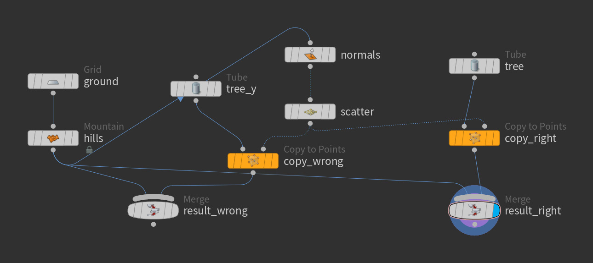
grid平らな格子を1枚出す。大きさを 10×10、分割を 40×40 にした。分割の数がそのまま点の数になり、あとで乗せるでこぼこの細かさの上限を決める。
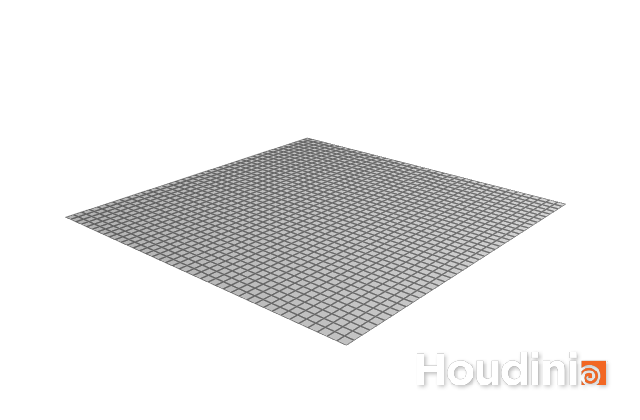
mountain地面にで起伏を付ける。height を 0.6、elementsize を 3.0 にした。elementsize は「うねりの大きさ」で、小さくすると細かい岩肌、大きくするとゆるい丘になる。
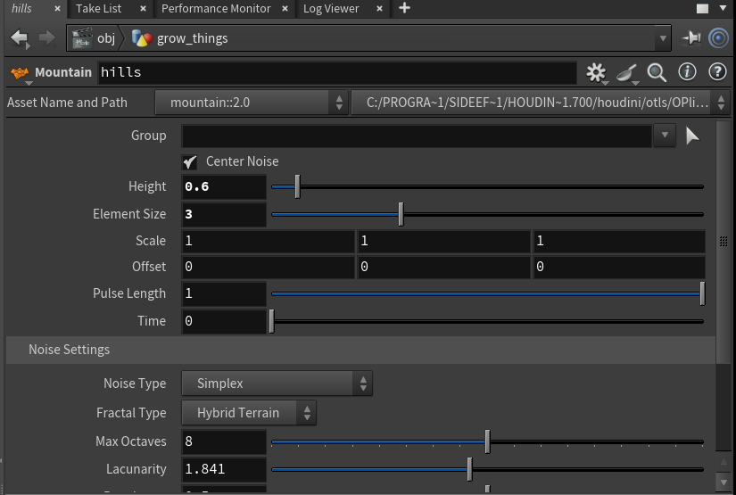
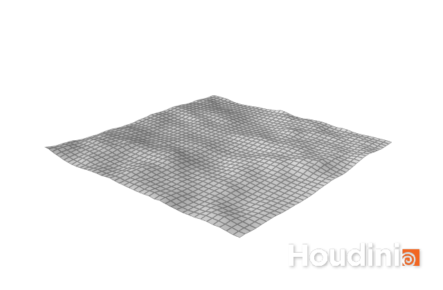
normal面がどちらを向いているかを表す N を作る。この段でやるのが肝心で、点だけになってからでは面が無いので計算できない。ここで作っておけば、次でばらまく点が N を受け継ぐ。
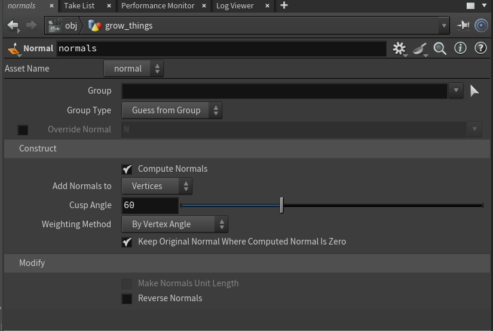
scatter地面の上に200個の点を散らす。この点が「木を立てる場所」になる。面積の広いところほど多く置かれるので、傾いた斜面でも自然にばらける。
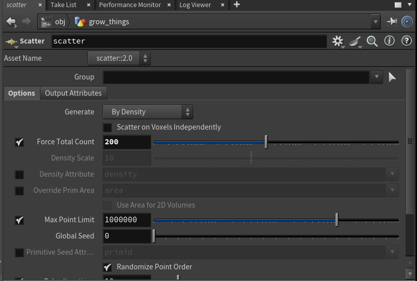
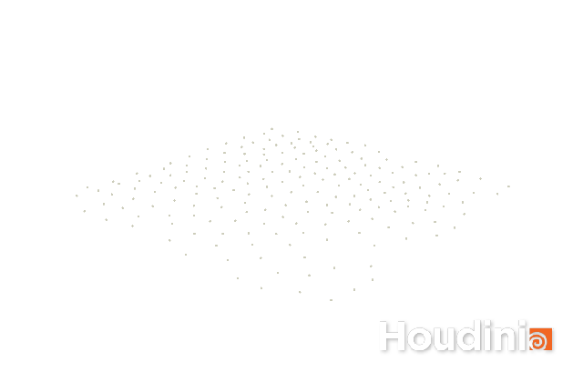
tube木の代わりに細い円錐を1本作る。太さを上下で変えて先細りにした。そして回転を X に 90 度かけて、Z 軸方向に倒しておく。理由は次の段で分かる。
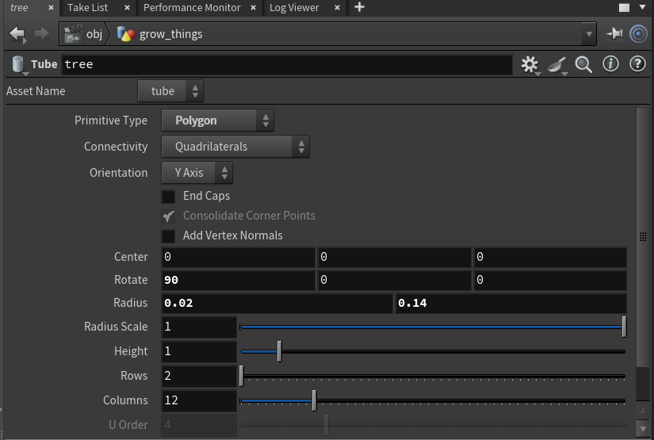
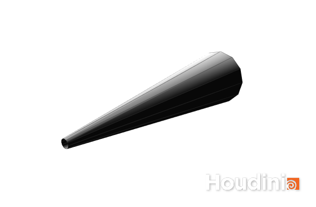
copy to points1本目の入力に円錐、2本目に点をつなぐ。点が持っている N に合わせて、1本ずつ向きが決まる。最後に地面と合流させれば完成。
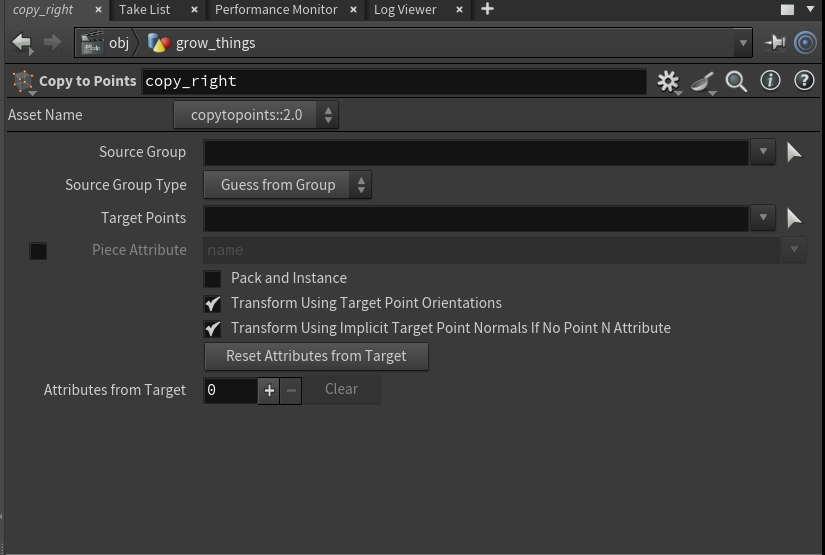
つまずくところ
は、の Z 軸を N に合わせる。Y 軸に立ったままの円錐を渡すと、200個すべてが90度倒れる。実験008で200個すべての角度を測ったところ、Y軸のままだと 90.00°、Z軸に倒しておくと 0.00° だった。
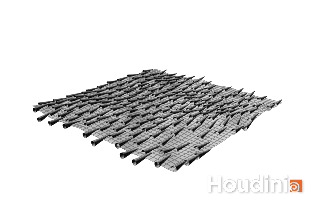
tube の type は既定が Primitive で、点が1個・面が1枚しか出てこない。複製しても何も見えないので、Polygon に変える。
を通すと面が無くなり点だけになる。そのあとで normal をかけても N は作れない。順番を逆にすると、木が向きを失って全部同じ方向を向く。

平らな板からでこぼこした地面を作る。Houdini で最初に覚えると応用が広い組み方で、岩肌にも雪原にも同じ手順で届く。
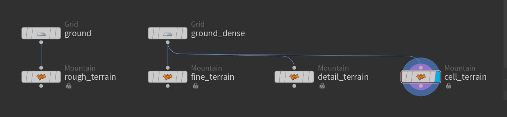
grid大きさ 10×10 の格子を出す。まずは分割を 20×20 にしておく。分割の数がそのまま点の数になり、あとで乗せる凹凸の細かさの上限を決める。
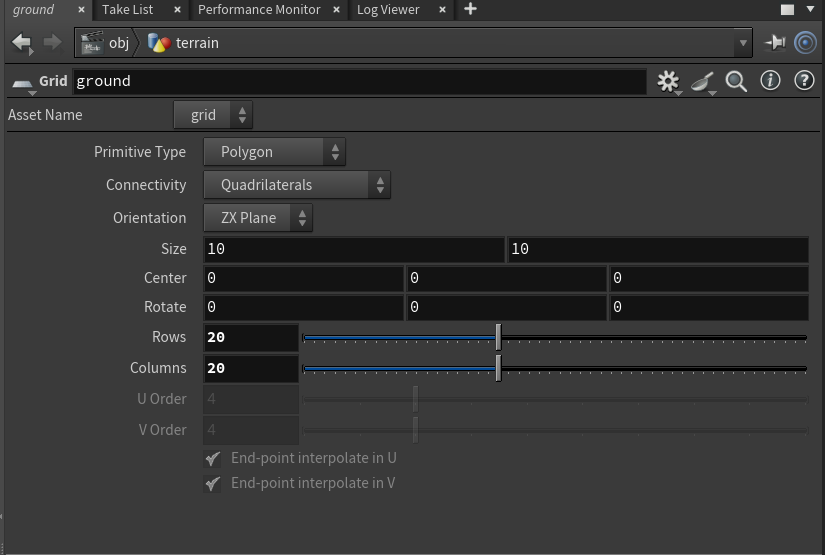
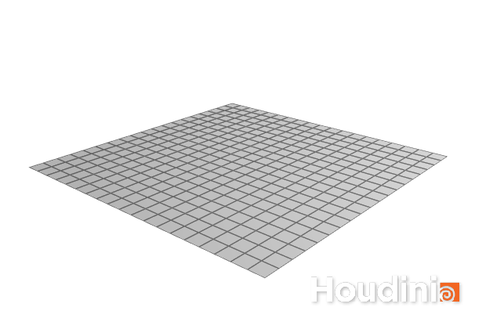
mountainheight を 1.2、elementsize を 4.0 にする。height は凹凸の高さ、elementsize はうねりの大きさ。この時点では板がカクカクしている。点が足りないせいで、の形を表しきれていない。
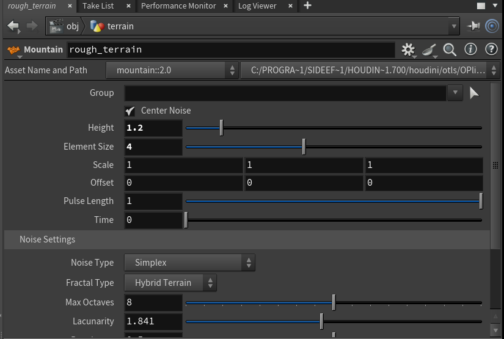
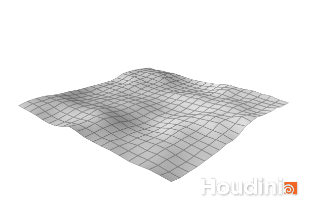
grid分割を 160×160 に上げる。ノイズの設定は何も変えていない。それでも見た目がなめらかになる。凹凸の大きさを決めているのは elementsize で、点の数は「どこまで細かく表せるか」を決めている。
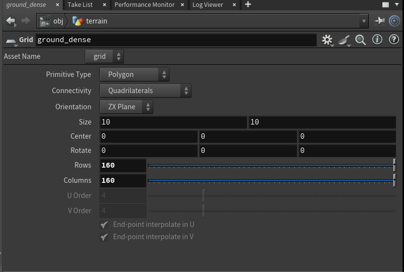
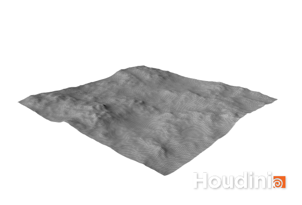
mountainelementsize を 1.2 に下げ、rough を 0.75 に上げる。elementsize はうねりを細かくし、rough はざらつきを足す。点が足りていれば、ここで岩肌らしくなる。
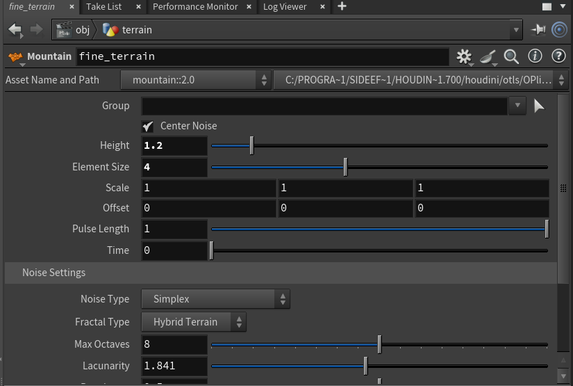
mountainbasis を worleyFA にする。細胞のような模様のノイズで、削られたような形になる。14種類あり、選ぶだけで見た目が大きく変わる。
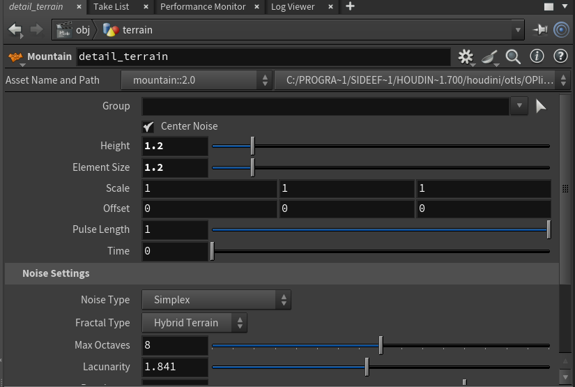
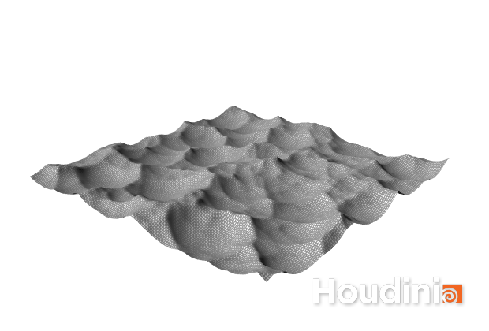
つまずくところ
elementsize を小さくしても、点が足りなければ表せない。実験004では、重ねるノイズの枚数（oct）を 3 から 8 に増やしても、点が足りない間はまったく変化がなかった。点を増やして初めて効き始める。
roughness や octaves という名前は存在しない。実際の名前は rough / oct / lac。一般的な名前で書くとエラーになる。
実験003で測ったところ、分割してからノイズをかけると凹凸のずれが最大 0.08062、逆の順だと 0.03671 だった。約2.2倍の差がある。分割は周りの点を平均するので、先に作った凹凸をなめしてしまう。
機械や建物のような、角のはっきりした形を作る。ここでは箱に円柱で穴を開ける。引く形を変えれば、溝でも窓でも同じ手順で作れる。 は見た目で合っているか判断しづらいが、体積の関係式で検算できる。数字はすべて実験012で実測したもの。
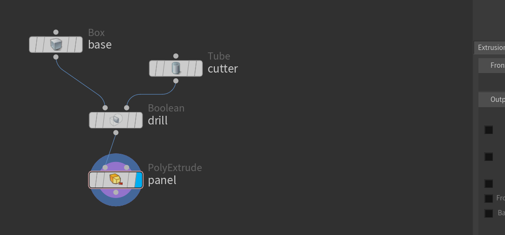
box大きさ 2.0 × 1.0 × 1.4 の箱を出す。8点・6面のいちばん単純な形。
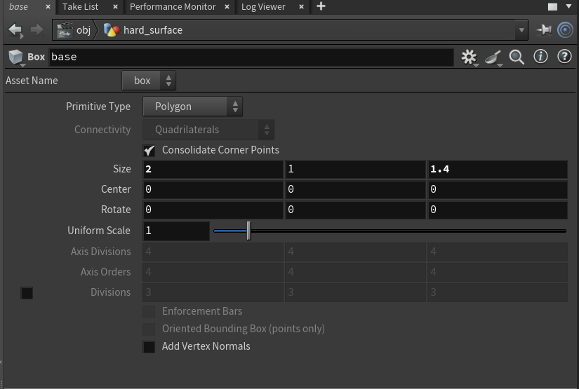
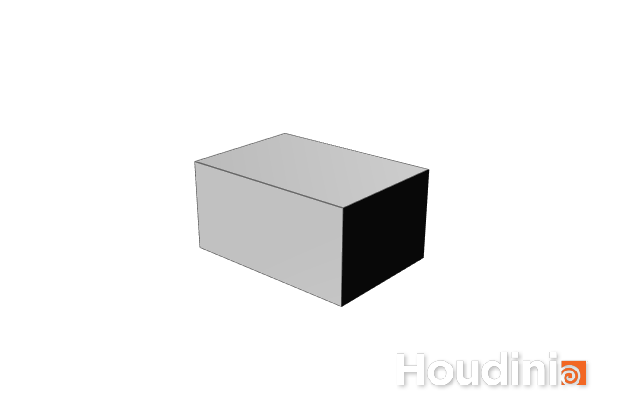
tube半径 0.32、高さ 3.0 の円柱を作る。箱より高くしておくのが肝で、そうしないと貫通せずに途中で止まる。type は Polygon にする（既定の Primitive だと点が1個しか出ない）。
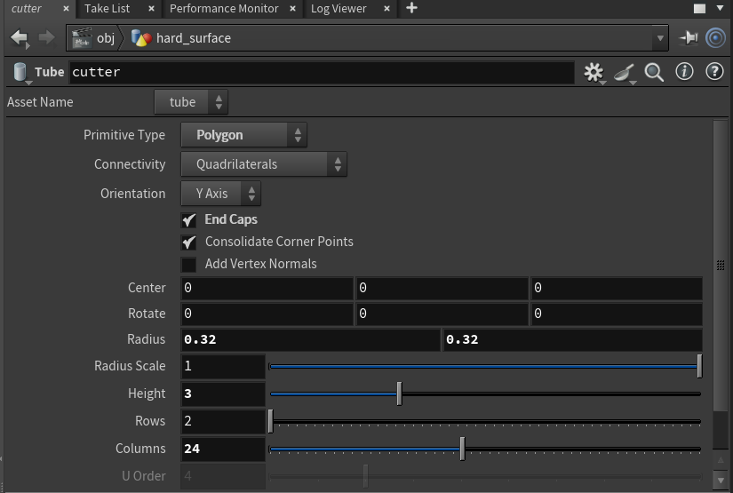
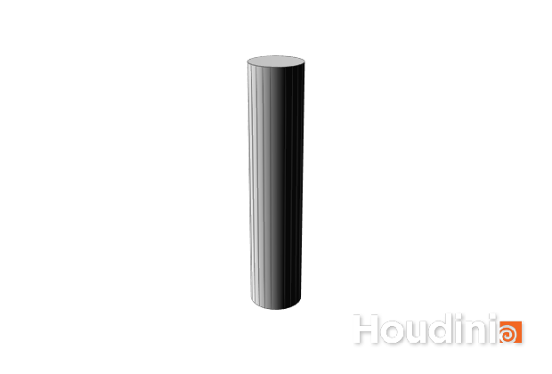
boolean1本目の入力に箱、2本目に円柱をつなぎ、booleanop を subtract（差）にする。箱から円柱の形が抜ける。union（和）なら足し算、intersect（積）なら重なった部分だけが残る。
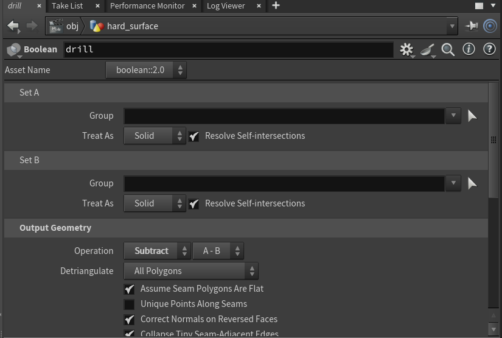
polyextrude板から立体を作るときは boolean ではなく を使う。dist に入れた距離はそのまま出る（0.5 / 1.0 / 2.0 を指定してできた高さは 0.50000 / 1.00000 / 2.00000、差はゼロ）。inset は各辺から内側に引っ込む距離で、0.3 にすると一辺は両側から 0.6 縮む（10.0 → 9.40000）。パラメータ名は dist / inset / divs で、divisions ではない。
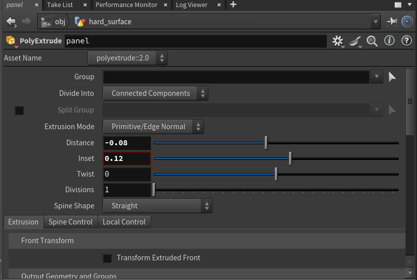
つまずくところ
円柱が箱より短いと、途中で止まった袋小路の穴になる。上下にはみ出す長さにしておくのが確実。
実験012で確かめたところ、和と積の合計が元の2つの合計と一致し（差 0.0000049）、差の体積も関係式とちょうど 0 の差で一致した。見た目で判断がつかないときは、この関係式で確かめられる。
よく使う Union（和）/ Intersect（積）/ Subtract（差）のほかに、Shatter（A を砕いて全部の破片を残す）、Seam（境界線だけを出す）、Detect（検出だけして形は変えない）、Resolve（自分自身の重なりを解消する）がある。Shatter の体積は元の箱と完全に一致した（どちらも 8.00000）ので、破壊の下ごしらえに使える。Seam は面数 6 のまま体積 0 になる。
sphere で rows / cols を 30 にしても、面数は 80 のまま変わらなかった。球は多面体を細分する別のやり方で作られている。しかもその粗い球の体積は 9.00180 で、同じ半径の真球 10.30575 より 13% 小さい。ポリゴンで近似した球は必ず内側に寄るので、体積を当てにするなら分割を上げる。
カクカクした形をなめらかにしたい。でも残したい角もある。この2つを両立させる。
box8点・6面の立方体。ここから始める。
subdivideiterations を 1 にする。面が4倍に増えて、角が少し丸まる。1回だけだと、まだ立方体だと分かる形。
subdivideiterations を 3 にすると、面は 64倍の 384枚になり、ほとんど球になる。分割は1回ごとに面を正確に4倍にする。
crease分割の前に crease を挟み、残したい辺に重みを付ける。重み 3 にすると、分割 3回に耐えて角が残る。重みの数字は「何回の分割まで角を保つか」を表す。
つまずくところ
分割すると形が少し小さくなる。実験002で、なめらかにしない方式（Bilinear）で試したところ、1辺は 1.00000 のまま変わらなかった。縮ませているのは分割そのものではなく、同時に走る平滑化のほう。
実験011で、重み1のときに1辺の長さだけ見ると角が保たれているように見えた。ところが折れ角を測ると 28.07° まで崩れていた。指標を1つしか見ないと誤判定する。
面は1回ごとに4倍。3回で64倍、6回で4096倍になる。立方体の6面が6回で 24,576面になる。重くなって手が止まるので、必要な分だけにする。

を並べる代わりに、数行のコードで点を動かす。既存のノードにない動きを作りたいときの逃げ道であり、点数が多いときはいちばん速い手段でもある。ただし「速い」が効くのは点が多いときだけで、その境目も測ってある。数字はすべて実験009・010で実測したもの。
grid10×10 の格子を 120×120 に分割する。 は点1つずつに同じ計算を走らせるので、点が多いほど結果はなめらかになる。
attribwrangle実行対象（class）を「点ごと」にして、2行書く。1行目で中心からの距離を測り、2行目でその距離から高さを決める。距離で割っているので、外側ほど波が小さくなる。
attribwrangleもう1つ置いて、高さから色を作る。Cd は色の。高いところほど赤く、低いところほど青くなる。
attribwrangleclass は5種類ある。Detail (only once) / Primitives / Points / Vertices / Numbers で、既定は Points。同じ @marker = 1.0; というコードでも、Points なら点に、Primitives なら面に、Vertices なら頂点に、Detail なら全体に1つだけ作られる。Numbers だけはアトリビュートが作られない。ジオメトリの要素ではなく、指定した個数の番号に対して走るモードなので、値を書き込む先が無い。
つまずくところ
class を「点ごと」にすれば点の属性、「面ごと」にすれば面の属性になる。同じコードでも置き場所が変わるので、あとのノードが見つけられなくなることがある。
パスをそのまま書くと、エラーも警告も出ないまま 0 が返る。頭に op: を付けるのが正しい。気づきにくいので覚えておく。
実験010で、 ループを VEX に書き換えたら 3,969面で 85.9倍速くなった。ただし for-each には「かたまりを切り離す」働きもあり、そこが必要な場合は置き換えられない。速さだけで選ぶと目的を失う。
一度目：cook(force=True) の前後を時計で挟んだ。計算量を100倍にしても時間は 0.9倍にしかならない。ジオメトリを要求した時点で初めて計算されるので、計測区間の外で処理が走っていた。二度目：Houdini の性能計測機能を使ったが、軽い処理も重い処理も同じ 0.008000 秒を返す。が効いていた。三度目：毎回新しいノードを作って初回のを測る。これでようやく、計算量100倍の処理が 17.7倍の時間になった。
64万点に sin×cos を1回かける処理が 2.47ミリ秒、256万点で 4.58ミリ秒。この2点から、1点あたりの限界コストは約1.1ナノ秒（毎秒約9億点）、固定の費用が約1.8ミリ秒と分かる。4万点では 1.49ミリ秒かかっており、そのほとんどが固定費。少ない点数なら、どう書いても体感は変わらない。
同じコードを別のノードで2回走らせて、全400点が小数点以下9桁まで一致した。乱数といっても点番号から決まる固定の値なので、実行するたびに変わることはない。だから結果が再現するし、逆に「毎回違う値」が欲しいなら種を自分で変える必要がある。
硬いものが割れて崩れる。で最初に触ると分かりやすい題材で、箱を壁や柱に変えれば、そのまま破壊の表現になる。
box大きさ2倍の箱を、床から少し浮かせた高さに置く。この時点ではただの箱で、8点・6面しかない。
rbdmaterialfracture素材に concrete（コンクリート）を選ぶ。素材ごとに割れ方の性質が変わる。ここで割れるのは形だけで、まだ何も動かない。動かすのは次の段。
rbdbulletsolver破片をそのままにつなぎ、床を置く設定を入れる。それだけで重力で落ちる。 を組む必要はない。
rbdbulletsolverフレームを進めると床に当たって砕け散る。見えるようにするには unpack を通して中身を取り出す。
つまずくところ
実験014で破片の広がりを測ったところ、落下中はずっと 2.0000 のままで、着地して初めて 5.6408 に広がった。割ってあっても、力がかからなければ割れ目は開かない。
硬いものなので体積は変わらないはず。実測でも全フレームで 8.00000、ばらつき 0.0000000 だった。おかしな結果が出たときは、この量を見ると設定ミスに気づける。
止まった破片は床から約0.022だけ沈んだ位置にある。接触の計算上、完全にゼロにはならない。
板を布にして、両端を留めて垂らす。旗・カーテン・服の土台になる組み方。
grid4×4 の板を 30×30 に分割する。分割が粗いと折り目がカクカクするので、布として見せるならこのくらいは要る。
attribwrangleを1行書いて、左右の端の点に pins という名前を付ける。ここで名前を付けておくと、あとのノードが「どこを留めるか」をこの名前で指定できる。
vellumconstraintsconstrainttype を cloth にする。どの点とどの点が、どれくらいの強さで結ばれているかが決まる。続けてもう1つ置き、type を pin、group を pins にして留める。
vellumsolver拘束を作ったノードの出力を2本とも渡す。重力で垂れ始め、しばらくすると形が落ち着く。
vellumsolverフレームを進めると、垂れ方が止まって形が変わらなくなる。
つまずくところ
group を空のままにすると「全部が対象」と解釈され、布全体が固定されて一切動かない。実験015では、最下点が全フレーム 3.0000 のままという症状で気づいた。
grouptype の既定は。点のを渡すなら points に変える。変えないと指定が効かない。
見えている数値をいくら触っても布はほとんど変わらない。効いているのは指数のほうで、既定が10になっている。実験015で、値と指数を入れ替えた組み合わせが同じ結果になることを確かめた。硬すぎる・柔らかすぎると感じたら指数を疑う。
球から煙を立ち上らせる。温度を一緒に供給するのが肝で、これを忘れると煙はその場で濃くなるだけで動かない。
sphere小さな球を下のほうに置く。ここから煙が出る。形は何でもよく、球でも箱でも文字でもよい。
pyrosource属性の個数を2にして、1つ目に density（濃さ）、2つ目に temperature（温度）を指定する。温度を入れるのがここでの肝。浮力は温度で生まれるので、これがないと煙は昇らない。
volumerasterizeattributes点に書き込んだ値を、立体の格子に焼き込む。こちらの属性欄は空白区切りの文字列なので、density temperature と2つ並べて書く。
pyrosolverつなぐだけで煙が立ち上る。dissipation を上げると消えやすくなり、disturbance を上げると細かくばらける。
pyrosolverフレームを進めると、頭が広がってキノコ型になる。計算する領域も自動で伸びていく。
つまずくところ
実験021で測ったところ、density だけを供給した場合、中身のあるマス目の数が全フレームで 504 のまま、計算領域も 16×32×16 のまま変わらなかった。濃くなるだけで昇りも広がりもしない。温度を足したら、マス目は28倍、領域は縦に4.5倍に伸びた。

pyrosource の attributes は「作る属性の個数」で、名前を書く欄ではない。volumerasterizeattributes の attributes は空白区切りの文字列。名前が同じで意味が違うので、片方の書き方でもう片方を埋めると動かない。
OpenGL の描画は速いが、光が煙の中を通る計算をしない。濃淡は出るが、どちらから光が当たっているかは分からない。見せる絵にするときは を使う。
上から水を落として、床にぶつけて広げる。つなぎ方に独特の作法があり、そこさえ越えれば難しくない。
box小さな箱を上のほうに置く。この形の中から水が湧く。
flipsource箱をつないでに変える。volumename を source に変えるのを忘れない。既定は surface で、そのままつないでも水は1滴も出ない。
flipcontainer水を計算する範囲を決める箱。ただの箱ではなく、液体の粒・容器・衝突という3つの筋道を束ねる中継点でもある。
merge器の1番目の出力と、作った湧き出し口を合流させる。ここで初めて「この器のここから水が出る」という形になる。
flipsolver器の3つの出力を、の3つの入力へそのまま渡す（1番目だけは合流させたほうを渡す）。床を置く設定を入れると、落ちた水が溜まる。
つまずくところ
実験017で4通りの配線を試して、すべて同じエラーで止まった。器が3つの筋道を束ねる中継点だと気づいていなかったのが原因。粒は器に入れて、器の3出力をソルバの3入力へ渡す。
器の1番目の出力を流れているのは粒ではなく、名前の付いた7つのボリューム。source という名前のものだけが水を湧かせる。実測では source で3,588粒、surface や別名では5粒のまま何も起きなかった。
既定では水面付近の層だけが粒で表される（）。水位を上げて量を5倍にしても、粒の数はほとんど変わらない。量の目安に使いたいときは、この設定を切る。
器とソルバの両方に同じ値を入れる。揃っていないと結果が狂う、と付属ヘルプに書いてある。
火花・雨・砂のような「小さなものがたくさん動く」表現の土台。ここだけは を自分で組む必要がある。
grid小さな板を上のほうに置く。この面から粒が生まれる。
dopnetパーティクルは だけでは組めない。この箱を作って、中に部品を並べていく。
popsolverpopobject（粒の入れ物）をの1番目、popsource（粒を生む部品）を2番目、popforce（力を加える部品）を3番目につなぐ。popsource には、さっきの板のパスを指定する。
dopimportDOPネットワークの結果は、そのままでは形として使えない。このノードで取り出す。読み込む対象の欄に * を入れるのを忘れない。空だとエラーも出ないまま0点になる。
dopimport毎秒200個の指定なら、1フレームあたり約8.3個ずつ増える。重力で落ちながら、下へ長い流れを作る。
つまずくところ
計算自体は動いているのに、SOP側では1点も見えない。エラーも警告も出ないので気づきにくい。* を入れる。
実験020で測ったところ、粒は齢より約1.3刻みぶん遅れて落ち始める。刻み（substeps）を倍にすると、ずれは半分になる。見た目だけなら既定で問題ない。

球に毛を12,516本生やし、房にまとめて、束ごとに色を変える。毛は Houdini の中でも道具の数が多く（guide で始まるだけで24種）、つなぎ方の決まりごとも多い。ここではいちばん短い道を通る。数字はすべて実験042〜046で実測したもの。
sphere毛を生やす面を1枚出す。type を Polygon Mesh にして、rows / cols を 40×40 にした。既定の Primitive のままだと点も面も無い「式としての球」が出てくるだけで、毛は生えない。この球は 1,522点 / 1,560面 になる。
normal面がどちらを向いているかを表す N を作る。毛は N の向きに伸びるので、これが無いと向きが決まらない。なお normal が書くのはの N で、点の からは読めない。ここでは次のノードに渡すだけなので問題にならない。
rest通すだけで、いまの位置が rest というに焼かれる。グルームの道具は「元の形」を基準に動くので、これが無いと hairgen が「Skin input has no rest attribute.」で止まる。土台をあとで動かすなら、この rest を持ったまま変形させる。
scatter球の表面に300個の点を散らす。この点がガイド（毛の案内役）の根元になる。面積の広いところほど多く置かれるので、どこかに偏ることはない。
attribwrangle散らした点1つにつき、外向きに線を1本伸ばす。長さ 0.5 を8等分して9点。ここで2つのアトリビュートを必ず付ける。ひとつは skinprim（どの面から生えたか。xyzdist で調べる）、もうひとつは各点の rest（自分の位置をそのまま入れる）。クラスは「ディテール」にして、1回だけ走らせる。
hairgen::2.0入力0に土台、入力1にガイドをつなぐ。density を 1000、influenceradius を 0.20 にした。density は本数ではなく「面積1あたりの本数」で、面積 12.53039 の球なら 12,516本になる（計算上は 12,530本で、差は 0.1%）。thickness は 0.008 にした。
hairclump::2.0入力0に毛、入力1に土台をつなぐ。hairgen とは順番が逆なので注意。clumpsize を 0.4 にすると144個の房になり、1房あたり約87本。毛には clumpid という「どの束に属するか」の番号が増える。
attribwrangleごとに走らせ、clumpid から乱数で色を作って、その毛の全部の点に Cd を書く。同じ番号なら必ず同じ色になるので、房がそのまま色分けされる。レンダで色を出すときは principledshader の「点の色を使う」を入れておく（既定でオン）。
つまずくところ
hairgen::2.0 は「土台 → ガイド」、hairclump::2.0 は「毛 → 土台」。片方を覚えてもう片方に当てはめると必ず失敗する。逆につなぐと「Invalid source …」で何も出てこない。実験043で4通りすべてを試して確かめた。node.inputLabels() で読めば、hairgen の入力は Rest Skin / Guides / Animated Skin / Volumes / Guide Interpolation Mesh、hairclump は Guides / Skin / Skin VDB / Custom Clump Curves と出る。
addpoint で作った点には、既にあるアトリビュートの欄はできるが中身は既定値のまま入る。土台から rest が流れてきていると、ガイドの全点の rest が原点になる。hairgen は rest の空間で距離を測るので、ガイドは全部が原点にあることになり、1本も使われない。しかもエラーも警告も出ない。見分け方は毛の長さで、unguidedlength の既定 0.05 ちょうどなら1本も拾われていない。
ガイドはこの半径の中にいる毛にしか効かない。半径1の球にガイド300本だと間隔は約0.2なので、既定のままでは 18.9% しか拾われない。0.10 で 73.1%、0.20 で 100%（12,514 / 12,516）。ただし上げすぎると、向きの違うガイドまで平均されて毛が縮む（0.20 で長さ 0.49765、0.80 で 0.48541）。
thickness は毛の直径で、世界の大きさに対する値。半径1の球を画面いっぱいに撮ると 0.103ピクセルにしかならず、ザラついた点の集まりにしか見えない。0.008 まで上げると 0.822ピクセルになり、毛の流れが読める。ただしレンダ時間は 5.0秒 → 10.7秒と倍になる。
手軽に毛を出すなら fur ひとつで足りる。ただし fur が出すのは N と P だけで skinprim が無く、hairclump につなぐと「Couldn't find skinprim attribute.」で止まる。束ねたり整えたりするなら、最初からガイドを組む道を通る。
HeightField は高さを「数の並び（）」として持つ仕組みで、の地形では難しい「水で削る」がそのまま計算できる。削った跡は debris や sediment といったレイヤーとして残るので、そこに草を生やしたり色を塗り分けたりできる。数字はすべて実験034〜037で実測したもの。
heightfield高さを2次元のボリュームとして持つ入れ物を作る。sizex / sizey を 200、gridspacing を 2.0 にした。解像度は size ÷ gridspacing で決まるので、これで 100×100 になる。この段階では面も点も無く、height と mask という2枚のボリュームだけが出てくる。
heightfield_noiseと同じ考え方で、高さのボリュームにを足す。amp を 120、elementsize を 80 にした。amp の数字がそのまま高さになるわけではなく、実測では amp 30 で高さの幅が 8.74（約0.29倍）。ただし倍率としては正確で、amp を4通り変えても「幅 ÷ amp」は 0.291329 と小数点以下6桁まで同じだった。
heightfield_erode山を削って谷に積もらせる。iterations を 4 にした。ここが HeightField を使う一番の理由で、レイヤーが2枚から7枚に増える（debris / sediment / flow / flowdir.x / flowdir.y が追加）。削れた場所・積もった場所・水の流れた向きが、あとから使える形で残る。
convertheightfieldHeightField のままではレンダできないので、最後にこれを通す。マス目1つが点1つになるので、100×100 なら 10,000点 / 9,801面。解像度がそのまま点数になるので、化は必要になったところで行う。
normalあとで草を立てるために N を作る。 を通すと面が無くなるので、ばらまく前にやる。
attribwranglevolumesample で、点の位置における sediment（積もった量）を読む。ついでに下り坂の向きも作る。高さを2か所サンプリングして差を取るやり方にしているのは、normal が N をに書くため、点のラングルから @N を読んでも空になるから。
scatter地形の上に900個の点を散らす。ここで読んだレイヤーの値を density に使えば、「削れた場所には生えない」「積もった場所だけ濃くする」といった配り方ができる。
copy to points細い円錐を1本作り、点の上に複製する。は Z 軸に伸ばしておく（rx に 90 度）。 はテンプレートの Z 軸を点の N に合わせるので、Y 軸のままだと900本すべてが横倒しになる。
つまずくところ
名前は「Grid Samples」だが、これを 128 にしても 1024 にしても 100×100 のまま動かない。解像度を決めるのは size ÷ gridspacing。細かくしたいときは gridspacing を下げる。実験034で確かめた。
浸食が残す「水の流れた向き」は flowdir.x と flowdir.y の2枚に分かれている。地形は水平なので、素直に set(fx, 0, fy) と書きたくなるが、これだと下り坂を向かない（実験036で測った平均は 96.5度＝でたらめ）。8通り総当たりで試したところ、入れ替えた set(fy, 0, fx) だけが平均 39.9度まで下がった。
点のラングルから @N を読んでも空のまま。実験036では、これに気づかず草の向きがでたらめになった。点の N が要るなら、attribpromote でバーテックスから点へ移すか、この手順のように高さから自分で計算する。
convertheightfield はレイヤーを点アトリビュートとして持ってくるので、float の flow がすでに点に乗っている。そこへ v@flow とベクトルで書こうとすると型がぶつかる。実験036でこれに掛かった。名前を変える。
100×100 で1回 0.68秒、4回 2.35秒。回数を4倍にしても時間は 3.5倍で、準備の分が乗っている。ただし実用の解像度（gridspacing を下げる）ではそのまま重くなるので、形が決まるまでは粗い解像度で試す。
Houdini の中だけで模様の画を作り（Copernicus）、材質に貼る。貼り方は3通りある。色として使う・凸凹に見せる・本当に形を変える。見た目は似ているが、輪郭を見れば区別がつく。数字はすべて実験039〜041で実測したもの。
copnet画を作るための入れ物。Houdini 21 では Copernicus と呼ばれ、この中で使えるノードは 262種ある。解像度は copnet 側で決める。setres を入れて res1 / res2 に 1024 を入れた。setres を入れ忘れても res1 / res2 の値は使われるので、意図した解像度になっているかは出てきた画で確かめる。
fractalnoiseCOP の中に置く。elementsize が模様の細かさ、rough が「細かい成分をどれだけ残すか」。ここでは elementsize 0.06、rough 0.6 にした。地形の と同じ考え方の数字で、小さくすると細かい岩肌、大きくするとゆるいうねりになる。
rop_image作った画をファイルに落とす。trange を「今のフレームだけ」にして、copoutput に書き出し先を入れ、execute を押す。パスは / 区切りで書く（Windows の \\ をそのまま入れると通らないことがある）。
uvunwrap画を貼るには「面のどこが画のどこにあたるか」の対応（UV）が要る。球をそのまま渡しても UV は付いていないので、uvunwrap を1つ挟む。地形なら convertheightfield が UV を付けて出してくれるので、この段は要らない。
principledshader::2.0/mat の中に作る。geo の中には作れないので注意。rough を 0.6 にした。この材質を material で土台に割り当てる。
basecolor_useTextureいちばん素直な貼り方。模様がそのまま色になる。形はまったく変わらない。輪郭の長さを測ると、何も貼らない場合との比が 0.99999 で、小数点以下4桁まで同じだった。
baseBumpAndNormal光の当たり方だけを変えて、凸凹があるように見せる。enable を入れるだけでは効かず、baseBump_bumpTexture に画を指定する必要がある。実験041では指定を忘れ、何も貼らない場合と数字が完全に一致して気づいた。
dispTexレンダのときに面そのものを動かす。dispTex_enable を入れ、dispTex_texture に画を、dispTex_scale に動かす量（ここでは 0.12）を入れる。点の数は増えないのに輪郭が変わるのが特徴で、輪郭の比は 1.02873、面積も 1.4% 増えた。
つまずくところ
これが bump と displacement の違いそのもの。輪郭の長さ ÷ 面積の平方根で測ると、何も貼らない場合を 1.00000 として、色 0.99999 / bump 0.99852 / displacement 1.02873。横から見たときのシルエットに出したいなら displacement しかない。逆に、シルエットが変わると困る場面では bump を選ぶ。
bump も displacement も、enable のトグルとテクスチャの指定が別になっている。片方だけだと何も起きず、エラーも出ない。実験041では bump のトグルだけ入れて、何も貼らない場合と数字（点 3,056 / 高さ 2.2916）が完全に一致したことで気づいた。数字が「まったく同じ」なら、それは効いていない印。
球や箱をそのまま渡しても UV は付いていない。貼ったつもりで何も変わらないときは、まず UV があるかを見る。convertheightfield のように、UV を付けて出してくれるノードもある。
principledshader::2.0 を geo の中に作ろうとすると「Invalid node type name」で止まる。/mat（マテリアルのネットワーク）の中に作って、material SOP からパスで参照する。
実験040で、模様の解像度を 256 から 1024 へ4倍にしても、貼った結果の画の変化は 1.04倍にしかならなかった。細かさは elementsize のほうが効く。まず elementsize で見た目を決めて、解像度は最後に上げる。
点と線で骨を組み、筒の皮を結び付けて、関節を曲げる。KineFX の骨はただのなので、専用のを覚えなくても普通の で作れる。ただし落とし穴が多く、そのほとんどが「エラーが出ないまま間違う」種類のもの。数字はすべて実験051〜054で実測したもの。
attribwrangle点を3つ置いて、polyline で1本につなぐ。それぞれに name（joint0 / joint1 / joint2）を付ける。これだけで骨になる。KineFX の骨は専用の形式ではなく、点1つが関節1つ、線が親子のつながりを表すだけのジオメトリ。クラスは「ディテール」にして1回だけ走らせる。
kinefx::rigdoctorこの時点では P と name しか無い。rigdoctor を通すと localtransform（4×4の行列）・transform（3×3）・parent_idx（親が誰か）の3つが付く。親子関係は線のつながりから読み取られるので、自分で書く必要はない。根元の parent_idx は -1 になる。
kinefx::rigattribwrangle普通の attribwrangle と同じ書き方で、関節の行列を書き換える。クラスは「点ごと」。真ん中の関節（joint1）の 4@localtransform に prerotate をかける。回転は子にだけ伝わるので、根元は動かない。
tube骨を包む筒を作る。半径 0.32、高さ 2.0、分割は 60×24。ここでは単純な筒だが、キャラクターのでも手順は同じ。
kinefx::jointcaptureproximity入力は「皮 → 骨」。近さをもとに、点それぞれが「どの骨にどれだけ従うか」を決める。皮に付くのは boneCapture という1つだけで、骨と皮は別々のジオメトリのまま残る。
kinefx::jointdeform入力は3つ。「結び付けた皮 → 元の骨 → 動かした骨」。元の骨と動かした骨を両方渡すのは、その差だけを皮に伝えるため。既定の Linear だと、90度で体積が 27.13% 減る。
method混ぜ方を Dual Quaternion に変えるだけ。同じ骨・同じ角度で、体積の減りが 27.1284% から 0.1764% になる（154分の1）。速さの差は 41万点で 1.04倍しかないので、ほとんどの場合こちらでよい。
つまずくところ
そのまま通しても何も足されない。transformations / inittransforms / outputparentidx を入れて初めて属性が出てくる。エラーは出ないので、属性が付いているかを自分で確かめる。
rotate() だと「動かしてから回す」になり、回した関節そのものが原点のまわりを回ってしまう。90度で先端が (−2, 0, 0) に飛び、正しい値 (−1, 1, 0) とのずれは 1.41。30度だと「少し曲がった骨」に見えてしまい、絵では気づけない。大きく振ると差が開くので、確かめるときは90度まで回す。
既定の Linear では、体積の減りが 27.1284% × (1 − cos θ) にぴたり乗る。6通りの角度すべてで、(1 − cos θ) で割った値が 27.1284〜27.1286 にそろった。90度で 27.13%、120度で 40.69%。ねじり（骨の軸まわり）だともっとひどく、179度で 66.81% 減る。
1つの点が2本の骨に従うので、関節の近くで2つの行列が混ざる。混ざった結果は、どちらの行列でもない縮んだ位置になる。1 にすると減りは 0.85% まで落ち、根元の点はぴくりとも動かなくなるが、関節が鋭く折れる。3 にするともっと減る（36.84%）。「なめらかにしたいから骨を増やす」は逆効果。
jointdeform の method を「Blend Dual Quaternion and Linear」にすると「Missing dual quaternion blend attribute」で止まる。点ごとの混ぜ具合を表す float のアトリビュートを自分で作り、名前を dqblendattrib に入れる。全点に 0.5 を入れると、減りは 14.69% で Linear のほぼ半分になった。
ねじれが根元まで広がる。170度ひねったとき、根元の帯は Linear で 14.1度しかねじれないのに、Dual Quaternion では 58.9度ねじれる。さらに、99.2度で止まっている帯のすぐ上が 170度になり、途中に段差ができる。体積は保たれるが、形が素直とは限らない。
Houdini 21 から入った MPM は、砂・雪・泥・パンのような「固体と流体の中間」を扱う。物を粒の集まりとして持ち、計算のときだけ格子に移して解く。組むのは box → mpmcontainer → mpmsource → mpmsolver の4だけで、地面すら置かなくていい。ただし黙って無視されるが多く、気づかないまま何も起きていないことがある。数字はすべて実験061〜067で実測したもの。
box1辺 1.0 の箱を y = 3.0 に置く。ここはただので、MPM 用の特別な準備は要らない。あとで mpmsource が この中を粒で埋める。
mpmcontainerMPM は粒を格子に移して解くので、その格子が届く範囲を先に決める必要がある。Size と Center で箱を置く。いちばん大事なのは particlesep（粒の間隔）で、これが細かさを決める。0.12 なら 1辺 1.0 の箱が 577粒になる。この範囲は他のノードにも配線でつなぐ。
mpmsource入力は 0 = 形、1 = さっきの範囲。箱の中が粒で埋まる。粒には Je と Jp（体積がどれだけ変わったか）や v（速度）が付く。横に投げたいときは initialvelocityx に初速を入れる。
mpmsolver入力は 0 = 源 / 1 = ぶつかるもの / 2 = 範囲。コライダが要らないなら 1 は空のままでよい。地面は最初から y = 0 にあるので、何も置かなくても粒は床で止まる（実験066）。あとはフレームを進めるだけ。
materialtypempmsource の materialtype が本体で、Elastic / Chunky / Liquid / Viscous / Sandy の5つ。既定は Chunky。同じ落とし方でも結果はまるで違い、30フレーム目の高さは Elastic が 1.0462（跳ね返って形が戻っている）、Chunky が 0.6070（潰れたまま）。
groundfrictionmpmsolver の Ground Plane にある groundfriction（既定 1.0）は、高校物理のクーロン摩擦の μ そのもの。横に初速 4.0 で投げたとき、止まるまでの距離は 初速² ÷ (2 μ g) の式に 0.04% で乗る（実験067）。隣の groundsticky は横滑りにはほとんど効かず、跳ね返るときにだけ働く。
particlesep結果を細かくしたいときは、substep より先にここを疑う。粒を 24.7倍（118個 → 2,916個）に増やしても、時間は 3.73倍にしかならない（実験065）。substep のほうは 16倍にすると時間が 25.5倍かかるうえ、高さはほとんど動かない（実験064）。
mpmsurfaceレンダに回すには面が要る。mpmsurface の outputtype を Polygon Mesh に変える（既定は Surface VDB）。出てくるのは polysoup なので、convert で Polygon に直す。面にすると体積が 27% 太る。膨らむ厚みは粒の間隔の 0.4倍（実験063）。
つまずくところ
Material Preset のメニューを10通り全部試して、結果は9桁まで完全に同じだった。エラーも警告も出ない。実際に効くのは materialtypeのほうで、こちらを変えると結果がはっきり変わる（実験062）。理由も確かめた。この項目には recipeutils.setPresetMenu というコールバックが付いていて、UI で触ったときにしか走らない。スクリプトから parm().set() しても、値が入るだけでコールバックは走らない。
mpmsolver の Ground Plane は groundactive が既定で 1。コライダを一つも置いていないのに、粒が y ≈ 0.3 で止まって混乱した。自由落下を測りたいときは、これを切る（実験066）。
そのままつなぐと点が2個しか出てこない。outputtype の既定が Surface VDB だから。Polygon Mesh に変えても、出てくるのは 1個の polysoup で、体積を測ると 0.06 のような出鱈目な値になる。convert で Polygon に直して初めて正しく測れる（実験063）。
mpmsolver の Wind Velocity を 0 / 2 / 5 / 10 と上げても、位置も速度も9桁まで完全に同じだった。風は空気抵抗を通してしか効かないので、airdrag が既定の 0 のままだと風速はただの飾り。その airdrag は速さの2乗に比例する抵抗で、しかも3次元の相対速度で決まるため、横風が落ちる速さまで変える（実験066）。
substep を 1 から 16 にすると時間が 25.5倍かかるのに、高さは 0.2998〜0.3048 とほとんど動かない。動くのは横の広がりだけで、それも 8 で落ち着く（実験064）。一方で粒を 24.7倍にすると、時間は 3.73倍で済んで高さが 23% 動く（実験065）。迷ったら粒のほうを細かくする。
粒の数は全フレームで幅 0（実験061）。ところが体積は材質しだいで大きく動き、砂は 16% 膨らみ、既定の塊は 31% 縮む（実験062）。砂は見た目にも極端で、同じ箱が 3.4366 × 0.2348 × 3.5088 まで広がる。「体積が保たれているか」を検算に使うと、ここで足をすくわれる。
一度計算したをファイルに書き、次からはそれを読む。同じ煙 40フレームが、計算だと約1秒、読むだけなら 0.06秒。
pyrosolverここでは手順「煙を出す」と同じ4つ（sphere → pyrosource → volumerasterizeattributes → pyrosolver）を使う。このままだと、フレームを動かすたびに最初から計算し直す。40フレーム回すと 0.99〜1.01秒かかった。

filecachesolver の下に filecache をつなぎ、をこちらに移す。File Path を Explicit にして、Geometry File に $HIP/guide_cache_cache/smoke.$F4.bgeo.sc と書く。$F4 はフレーム番号（0001, 0002 …）に置き換わるので、1フレームが1ファイルになる。$HIP はシーンファイルのあるフォルダ。
f1Evaluate As を Frame Range にすると、Start/End/Inc の範囲が書き出される。ここの既定は $FSTART / $FEND という式で、シーン全体（新しいシーンなら 1〜240）を指している。40フレームだけ欲しいなら、式を消してから 1 と 40 を入れる（パラメータを右クリック → Delete Channels で式が消える）。
filecacheSave to Disk を押すと、範囲の全フレームを計算しながらファイルに書く。書き終わったら、フォルダのファイル数を数える。40フレームのつもりなら40個のはず。この手順では 0.15秒で 40個・63.3 MB になった。
loadfromdiskLoad from Disk をオンにすると、上流を計算せずにファイルを読む。40フレーム回すのが 0.99秒から 0.06秒になった。実験025で、読んだ値は計算した値と40フレームすべてで一致する（の合計の差 0.0000000000）ことを確かめている。
つまずくところ
実験025では Python から数値を入れたのに式が残り、40フレームのつもりが 240フレーム書かれた。3,578.9 MB を書いて 28.81秒。式を消してから入れ直すと 63.3 MB・0.15秒で、56倍の無駄だった。書き出したファイルの数を数えれば一発で気づける。
Load from Disk がオンのままだと、上流のパラメータを変えても画面は変わらない。実験027で pyrosolver の dissipation を半分にしたところ、30フレーム中29フレームで違う値になり、F30 の密度は +52.9%。古いを読んでいたら、これを正しい値として使っていたことになる。上流を触ったら書き直す。
同じ計算を2回書き出すと、ファイルの合計サイズが 138バイト違った（38,927,958 → 38,928,096、実験027）。中身の値は同じでも、ファイルはバイト単位では一致しない。確かめるなら、読んだ値そのものを比べる。
書き出しが 0.15秒で済んだのは、直前に全フレームを計算していたから。まっさらな状態から書き出せば、計算の時間がそのまま乗る（実験025では 1.17秒）。何度も見返すときや、下流をいじるときに効く。
降ってくる粒を横風で流す。popwind は粒を押し続けるのではなく、風の速さまで追いつかせる。だから流れは途中から一定の速さになる。
grid1 × 1 の板を y = 3 に置く。この面から粒が生まれる。
popsolver手順「粒を降らせる」と同じく dopnet の中に組む。popsolver の入力には名前があり、1番目が Object、2番目が Pre-Solve、3番目が Sources (post-solve)。popobject を1番目に、popsource を3番目につなぐ。popsource には板のパスを入れ、1秒に200個生ませる。
popforcepopforce の force に (0, −9.80665, 0) を入れる。popforce は入れた数字をそのまま加速度として足し続ける（実験029）。
popwindpopwind を popforce の下につなぎ、それを popsolver の2番目（Pre-Solve）へ。力のノードは数珠つなぎにできる。wind を (3, 0, 0)、airresist を 1 にする。いちばん古い粒の横の速さは、1秒で 2.7978、2秒で 2.9911、3秒で 2.9996。風速の 3 に近づくだけで、超えない。
copytopointsdopimport で取り出す（読み込む対象に * を入れる）。粒は点なので、そのままではレンダに写らないほど小さい。半径 0.06 の小さな球を作り、copytopoints で粒の位置に配る。
dopimport3秒で 602粒。生まれた粒はすぐ風に追いつき、横も下も一定の速さで流れる。そのため流れは曲がらず、まっすぐな斜めの線になる。
つまずくところ
実験029で、重力なし・最初の1フレームだけ生んだ粒で比べた。popforce に 3 を入れると速さは伸び続け、2.96秒で 8.875。popwind に風速 3 を入れると 2.96秒で 2.6962（風速の 89.87%）で、3 を超えない。「押す」なら popforce、「その速さで流す」なら popwind。
この手順では、いちばん古い粒の下向きの速さが 2秒で −2.9338、3秒で −2.9339 と止まった。重力だけなら 3秒で秒速 29 ほどまで加速する計算になる。popwind の空気抵抗は風の向きだけでなく、粒の動き全体にかかる。
実験029で測ると、popwind の抵抗は速さの差の2乗に比例していた。風速の半分に届くのは 1 ÷（airresist × 風速）秒後。airresist と風速の4通りの組み合わせすべてで 50.00% になった（重力なしの条件）。
効く範囲が、原点を中心とした半径1の球に決まっている。粒が y = 3 にいると範囲の外で、エラーも出ずに1ミリも動かない。中心と大きさを粒に合わせると回り始めた（実験029）。
の布は、布そのものの拘束では破れない。破りたい線で先に切っておき、glue で貼り直す。重さが貼り目にかかると、しきい値を超えたところで外れる。
gridOrientation を XY Plane にして縦に立て、4 × 4、40行 × 40列にする。中心は y = 2.2。1,600点の布になる。
attribwrangleRun Over を Primitives にして、面の重心 @P が線より下かどうかを書く。float line = 2.6 + 0.45 * sin(@P.x * 2.2); i@lower = (@P.y < line) ? 1 : 0; 点ではなく面に付けるのが肝心。点に付けると1枚の面の4隅で答えが割れ、切り口がぎざぎざに崩れる。
blastblast を2つ置き、片方は @lower==1、もう片方は @lower==0 を消す。Group Type は Primitives にする。2つを merge で合流させると、切り口の点が二重になる。1,600点が 1,666点（+66）になった。
attribwrangle上端の点をにする。if (@P.y > 4.1) { @group_pins = 1; }
vellumconstraintsConstraint Type を Cloth にする。伸びの distance 4,706本と、曲げの bend 4,420本ができる。ここに breaking を入れても布は破れない（下の「つまずくところ」）。
vellumconstraintsもう1つ vellumconstraints を置き、左右の出力をそのまま左右の入力につなぐ。Constraint Type を Glue にして、Enable Breaking をオンにして Threshold を 1 にする。重なった点1組につき1本の stitch ができる。今回は 66本で、切って増えた点の数と一致した。ここがずれていたら、貼り忘れか貼りすぎがある。
vellumconstraints3つ目の vellumconstraints で Constraint Type を Pin to Target にし、Group Type を Points、グループを pins にする。
vellumsolver左右の出力を vellumsolver の左右へ。40フレームの計算は 3.59秒。しきい値 1 だと、66本の stitch は F5 までにすべて外れた。F40 では 683点と 983点の2つの塊に分かれている。
つまずくところ
実験031・032で、cloth が作る distance 拘束に breaking を入れ、しきい値を 0.000001 まで下げても1本も減らなかった。breaking が効いたのは glue が作る stitch だけ。だから「先に切って、あとから貼る」順にする。
実験032では、しきい値 10 以下なら外れ、100 以上なら外れなかった。10 のときは少しずつ外れる。外れないときは、貼り目がまったく見えない。破れるまでは1枚の布として振る舞う。
選択肢は上から Guess from Group / Breakpoints / Edges / Points / Primitives。Python で番号の 1 を入れると Breakpoints になり、何も消えずに素通りした。エラーは出ない。実験032では、合流後の点数がちょうど2倍（3,200）になり、stitch が 1,600本できたことで気づいた。切れていない2枚が丸ごと重なっていた。

煙の組み方を「燃える元」に変えると炎が出る。温度を blackbody() で色に直せば、低いところは橙、高いところは黄色になる。
sphere手順「煙を出す」と同じ小さな球（半径 0.22、y = −0.9、24行 × 24列）。
pyrosourceInitialize のメニューから Source Burn を選ぶ。作られる値が burn と temperature になる。burn が「燃える元」で、がこれを炎に変える。density は作られないことに注意（煙の量を測りたいときは temperature を見る）。
volumerasterizeattributesattributes に burn temperature と空白区切りで書く。Voxel Size は 0.05。
pyrosolverCreate Flame Field をオンにすると、燃えている部分の場 flame ができる。煙も出したいなら Set Flame Density をオンにし、Flame Density を 1.0 に上げる（実験023では既定の 0.0001 だとほとんど出なかった）。30フレームの計算は 0.75秒。

pointsfromvolumeそのものには色を付けず、中に点を置いて点に色を付ける。点なら確認用の描画でも色が見える。Point Separation を 0.08 にすると 4,779点になった。
attribwrangleRun Over は Points。2本目の入力にソルバをつなぎ、float t = volumesample(1, "temperature", @P); でその点の温度を読む。vector c = blackbody(t * 3000.0, 6500) / 6500.0; で色にして、@Cd = c / max(max(c.x, c.y), max(c.z, 1e-6)); と一番大きい成分で割る。点の温度は 0.32〜0.99 で、3000倍して 968〜2,979K として色にした。
つまずくところ
引数は2つで、blackbody(温度, 白として扱う温度)。1つだけだとエラーになる。返る値は、2つ目に 6500 を入れると緑がちょうど 6500 になる大きさで、そのまま色に入れると真っ白になる。6500 で割って初めて見える値になった（実験026）。
1000K は (1.4015, 1.0000, 0.0806)。0〜1 に丸めると (1.0, 1.0, 0.08) で、赤と緑が同じ＝黄色になる。一番大きい成分で割れば (1.0, 0.713, 0.058) で、橙赤のまま明るさだけが揃う。
1000K と 1500K はまったく同じ値だった。赤と青の比は 1000K で 17.39、8000K で 0.7381 と下がっていくが、低いほうは頭打ちになる。炎の一番冷たいところを描き分けたいなら、換算の倍率を上げてこの下限より上に収める。
煙だけの設定では、shredding を 0 から 5.0 にしても数字が1桁も動かなかった。燃焼を入れると炎がちぎれて薄く広がり、F40 で炎の合計が 40.1% 減った。ただし F5 では温度の合計の差が 0.6% しかない。短いフレームだけ見て「効かない」と決めない（実験023）。
温度 0.02 未満の点を消す blast も付けたが、ばらまいた点の温度は最低でも 0.32 で、1点も消えなかった（4,779点のまま）。付ける前に、温度の範囲を一度数えておくと無駄な枝を増やさずに済む。

生やした毛を で動かし、の風で横へなびかせる。根元の留め方と、曲がりにくさが何に効くかがつまずきどころ。
sphere30行 × 30列の球を作り、normal で向きを付け、rest で元の位置を覚えさせる。毛はこの向きに生える。
attribwranglescatter で根元を 120点ばらまき、 で各点からの向きに長さ 0.6・10区切りの線を立てる。線には、どの面のどこから生えたか（skinprim / skinprimuv）を持たせておく。
hairgenhairgen の1番目に面、2番目にガイドをつなぐ。Density 50、Influence Radius 0.25、Thickness 0.012 で 620本・6,820点になった。
attribwrangleRun Over を Primitives にして、各毛の最初の点に stopped を立てる。int pts[] = primpoints(0, @primnum); setpointattrib(0, "stopped", pts[0], 1); Vellum はこの値が 1 の点を動かさない。
vellumconstraintsConstraint Type を Hair にする。曲げの Stiffness は 0.05。質量を計算する設定（domass）をオンにする。既定はオフで、オフのままだと mass が −1 のまま入る（実験048）。
vellumsolver左右の出力を vellumsolver の左右へ。Built-in Wind を有効にして、向きを (1, 0, 0)、Built-in Wind Speed を 40 にする。48フレームの計算は 2.36秒。
つまずくところ
実験048の組み方では、Pin to Target の拘束を足しても1本も作られず、毛が根元ごと落ちた。group・pingroup、pintype の Permanent / Stopped / Soft をすべて試しても同じ。根元の点に stopped を直接立てると効いた。
曲げの Stiffness を 0 から 1,000,000 まで変えても、毛先の高さは −0.5784 → −0.5852 と 1.2% しか動かなかった。変わったのはまっすぐさで、いちばん曲がった毛で 0.835 → 0.990。固い毛は「同じところまで垂れるが、まっすぐなまま垂れる」。100 あたりで頭打ちになる（実験048）。
毛の長さは風速 0 で 0.599089、40 で 0.631461 と 5.9% 伸びた（実験049）。重力だけなら 0.63%。Vellum の拘束は硬いばねで、鎖ではない。
流され具合は、速度の差の2乗で効く式によく乗った（残差の二乗和が一次の式の 3.5分の1）。実験029の粒と同じ形。ただし最大 0.054 ずれ、完全には説明できない。式の違いがはっきり出るのは弱い風のほうで、風速 2 では一次の式が 0.445、二次の式が 0.303、実測は 0.321 だった。
浸食した地形には、水が流れた向き（flowdir）が残る。それを草の向きに入れると、草が流れに沿って倒れる。ただし flowdir の x と y は入れ替えて使う。
heightfield_erodeheightfield（200 × 200、Grid Spacing 2）→ heightfield_noise（Amplitude 120、Element Size 80）→ heightfield_erode とつなぐ。Iterations per Frame は 4。浸食すると、水が流れた向き flowdir がレイヤーとして残る。
convertheightfieldconvertheightfield で 10,000点のにする。このとき flow や sediment などのレイヤーは、点のとして一緒に持ち込まれる。
attribwrangleRun Over は Points、2番目の入力に浸食後のハイトフィールドをつなぐ。float fx = volumesample(1, "flowdir.x", @P); float fy = volumesample(1, "flowdir.y", @P); v@flowvec = set(fy, 0.0, fx); x と y を入れ替えるのが肝心（下の「つまずくところ」）。名前は flow ではなく flowvec にする。
scatterscatter で 900点。ばらまいた点は、元の点のアトリビュート（flowvec）を引き継ぐ。
attribwrangleif (length(v@flowvec) > 1e-6) @N = normalize(v@flowvec); else @N = set(0, 1, 0); copytopoints は形の Z 軸を N に合わせる。だから N に流れの向きを入れると、草はその向きへ倒れる。
copytopointstube で根元の半径 0.35・先 0.02・高さ 7 の細い円すいを作り、x に 90度回して Z 軸向きにする（実験008と同じ考え方）。copytopoints で 900点に配り、merge で地形と合わせる。
つまずくところ
flowdir.x を x、flowdir.y を z に入れると、下り坂との角度は平均 96.48度で、でたらめ（90度）とほぼ同じだった。8通りの並べ方を総当たりして、set(fy, 0, fx) だけが平均 39.95度・中央 29.94度まで下がった。他の7通りは 83〜140度（実験036）。

convertheightfield はレイヤーを点アトリビュートとして持ち込むので、メッシュの時点で flow という数値1つのアトリビュートがある。v@flow と書くとこれとぶつかり、ベクトルのつもりが数値1つになっていた。新しい名前（flowvec）を使う。
900本すべてで、N に入れた向きとのずれは 0.000度だった。向きがおかしいときは、複製ではなく N に入れた値のほうを疑う。

MPM の塊を、横に動く板に乗せて運ぶ。コライダは既定では動かない扱いなので、種類を変えないと板をいくら動かしても塊は何も感じない。
mpmsource手順「塊をぶつけて潰す（MPM）」と同じく、1辺 1.0 の box を mpmsource で粒にする。mpmcontainer は運ぶ先まで入るよう、Size を (40, 8, 8)、Center を (14, 2, 0) と横長にする。particlesep は 0.12。
boxもう1つ box を (60, 0.4, 6) の板にして、y = −0.2 に置く。Translate の x に式 10.0 + ($FF - 1) / $FPS * 4.0 を入れると、1秒に 4 ずつ横へ動く。
mpmcollider入力は 0 = 板、1 = 計算範囲。Collider Type を Animated (Rigid) にする。既定の Static のままだと、板を動かしても塊は何も感じない（下の「つまずくところ」）。Friction は 1。
mpmsolver入力は 0 = 粒、1 = コライダ、2 = 計算範囲。の組み込みの地面（groundactive）はオフにする。自分で置いた床と重なると、先に触った面の摩擦しか効かない（実験069）。40フレームの計算は 2.26秒で、塊の平均位置は x = 5.34 まで運ばれた。
つまずくところ
実験070で板の速さを5通りに変えても、Static のままでは結果が6桁まで同じだった。エラーも警告も出ない。Animated (Rigid) に変えて初めて塊が動き出す。

摩擦 0 では、運ばれた距離も最後の横の速さも −0.000000 だった。板が物を運ぶのは摩擦があるから。
板の速さに追いつくまでは「½ μ g t²」に 0.4% で乗った。追いついたあとは、摩擦が強いほど式より短くなる（摩擦 2.0 で式の 0.88倍）。板が速いほど強くこすられて塊が潰れ（板の速さ 1 → 8 で、高さ 0.49 → 0.25）、上のほうが遅れるため。
Animated (Rigid) では、Compute Velocity を切っても値は6桁まで同じだった。Animated (Deforming) で切ると、塊は動かなくなった。剛体の動きなら Rigid と Deforming の答えはほぼ同じ（5.336132 対 5.335937）なので、Rigid でよい。

確認は速い OpenGL で、人に見せる1枚は で撮る。材質・ライト・カメラ・Karma の出力の4つを足すだけで撮れるが、白飛びと数に気をつける。
attribwrangleここでは浸食した地形の点に、岩・土・水の3色を @Cd で塗った（堆積 sediment と流れ flow の量で分ける）。点の色は、材質を割り当てなくても Karma に出る。
material/mat に principledshader を作り、Use Point Color をオン（既定でオン）、Roughness を 0.75 にする。地形の下に material ノードを足し、Material 欄にその材質のパスを入れる。色のためではなく、白飛びを抑えるために割り当てる（下の「つまずくところ」）。
envlight空全体から照らす envlight（強さ 1.0）と、向きのある hlight を Distant にしたキーライト（強さ 2.4、回転 (−38, −32, 0)）の2つ。点光源は距離で弱まるので、既定の hlight のままだと被写体が暗く写る。
camcam を置き、解像度を 720 × 460 にして地形が収まる向きに向ける。
karma/out に karma を作り、Camera にさっきのカメラを入れる。Primary Samples と Max Secondary Samples を 24、Denoiser は off、Output Picture に書き出し先を入れてレンダする。1枚 3.49秒。ただし起動直後の1枚目は 19.49秒かかった。同じ地形を OpenGL で撮ると 1.29秒（実験038）。
つまずくところ
材質を割り当てないと、地形の画素の 43.4% が真っ白に飛んだ。割り当てると 3.1%（実験038）。しかもライトを絞っても直らない。材質ありでキーライトを 2.4 から 0.3 に下げても、白飛びは 3.0% → 2.9% にしか変わらなかった。
samplesperpixel は「ここまで使ってよい」という上限。64 から 4096 へ64倍にしても、実際に使われたサンプル数は 99 から 567 へ5.7倍にしかならなかった。打ち切りを決めているのは varianceaa_thresh（既定 0.01）。0.0002 まで下げると絵は詰まるが、時間は 5.39秒 → 70.64秒 と13倍になった（実験018）。
実験018の煙（640 × 360）では、1枚に固定費 2.26秒、1サンプルあたり 7.44ミリ秒。256サンプルでも半分強が固定費だった。軽い絵を何枚も撮るときは、サンプル数より枚数のほうが時間に効く。確認の描画は OpenGL で済ませる。
作った形をファイルにして、他のソフトへ渡す。 では FBX・glTF・Alembic が使えないので、形を渡すなら obj になる。画面からは File か Geometry Output で書ける。
colorここでは 16行 × 24列の球に uvunwrap で UV を付け、color で色を塗った。338点・360面で、点に Cd、に uv が乗っている。
filefile を下につなぎ、File Mode を Write Files にする。Geometry File に $HIP/guide_export/shape_file.obj と書く。形式は拡張子で決まる。このノードが計算されるたびに、そのときの形がファイルに書かれる。
rop_geometry決まったときに1回だけ書きたいなら、rop_geometry を使う。Output File に $HIP/guide_export/shape_rop.obj、Valid Frame Range を Render Current Frame にして、Save to Disk を押す。Apprentice でも obj は書けた。どちらのやり方でも 48,150バイトで、0.003〜0.004秒。
file書いたファイルを File SOP（Read Files）で読み直すと、338点・360面のまま、Cd と uv も残っていた。渡す前に一度読み直して、数と中身を数える。
つまずくところ
FBX は「FBX export is not supported in Houdini Apprentice.」と断られる。glTF と Alembic も同じく止まる。USD は書けるが、拡張子が .usdnc に変えられ、そのままでは他のソフトが読めない。リグやアニメーションを他のソフトへ渡すには、ライセンスを上げるしかない（実験058）。
残るのは位置・色（Cd）・UV（uv）まで。自作の値（myvec・myfloat など）、pscale、点のはすべて消えた。バーテックスにあった N は、読み直すと点に移っていた（実験059）。
NURBS の球（312点・1面）は、obj にすると 2,232点・2,160面になった。点が 7.2倍、ファイルは同じ球をで作ったときの 17倍（705,418バイト 対 40,409バイト）。NURBS のまま渡そうとしない。
骨の線（polyline）を含む形を stl にすると、371点が 365点に減った。stl は三角形の集まりしか持てない。Houdini 同士なら bgeo.sc が位置も名前もそのまま往復し、ファイルも最小（6,231バイト）だった（実験058）。
「面を1枚ずつ取り出して処理する」は で組めるが、面が多いと重い。点の共有をほどいてから で書けば、同じ結果が数十〜数百倍速く出る。
facet10 × 10 の grid の下に facet を置き、Unique Points をオンにする。隣り合う面が共有していた点が面ごとに分かれ、22行 × 22列の板なら 441面・1,764点になる。これをしないと、隣の面が同じ点を別々の高さへ動かそうとして、面ごとに独立して動かせない（実験010）。
block_beginblock_begin（Method は Extract Piece or Point）と block_end で処理を挟む。block_end は Iteration Method を By Pieces or Points、Piece Elements を Primitives、Gather Method を Merge Each Iteration にし、Piece Block Path に block_begin を入れる。何回目かを知るには、Method を Fetch Metadata にした block_begin をもう1つ置く。
attribwrangleループの中の で int i = detail("op:../each_meta", "iteration", 0); @P.y += rand(i) * 0.5; と書く。取り出した中では @primnum が常に 0 になるので、何枚目かはメタデータから読む。パスの頭の op: を忘れると、エラーも出ずに 0 が返る（実験010）。
attribwranglefacet の下に wrangle を1つ置き、Run Over を Primitives にする。float h = rand(@primnum) * 0.5; foreach (int pt; primpoints(0, @primnum)) { vector p = point(0, "P", pt); setpointattrib(0, "P", pt, p + set(0, h, 0)); } 各面が自分の点を持ち上げる。for-each と比べると、49面・441面・3,969面のすべてで結果が完全に一致した。
attribwrangle上流を少し動かして計算し直させると、3,969面で for-each は 167ミリ秒、VEX は 0.8ミリ秒だった。for-each は面の数にほぼ比例して遅くなるが、VEX はほとんど変わらない。形を調整するたびにこの差がかかる。
つまずくところ
実験010ではノードを毎回作り直して測り、3,969面で 191.87ミリ秒 対 2.23ミリ秒（85.9倍）だった。作り直しには VEX の固定費（約1.8ミリ秒、実験009）が乗る。この手順は作ったあとで計算し直させて測ったので、差が約200倍と大きく出た。どちらでも、面が多いほど差が開く向きは同じ。
最初は cook(force=True) で計算し直させて測ったが、VEX 側が 0.02ミリ秒と出た。本当に計算していなかった疑いがあるので、上流の grid をごくわずかに動かして両方を確実に計算し直させ、上流だけの時間を引いて測り直した。
1回分の処理の中で複数のノードを通したいときなどは、for-each でしか組めない。VEX 1つで書ける処理なら、置き換える価値がある（実験010）。

1点から一度に粒を飛ばし、重力で落としながら、ばらばらの時刻に消していく。粒を短い線にすると、速さが筋になって火花らしく見える。
addadd で原点に点を1つだけ作る。ここから全部の火花が出る。
popsourcedopnet の中に popobject・popsource・popsolver を置く（手順「粒を降らせる」と同じ）。popsource の Emission Type を Points にし、Const. Activation を切って Impulse Activation を入れる。Impulse Count に if($FF == 1, 3000, 0) と書くと、最初のフレームに 3,000粒をまとめて生む。
lifeLife Expectancy 1.2、Life Variance 0.6。寿命は 0.6〜1.8 の間に一様に散る（実験079で、4,000粒の寿命を10区間に分けるとどこもほぼ同じ数だった）。生きている数は一定の速さで減っていく。
velxInitial Velocity を Set initial velocity にして、Velocity (0, 3, 0)、Variance (7, 7, 7)。Variance は「その半径の球の中に散らす」数字（実験079）。上向きの速さ 3 より大きい 7 にすると、全方向へ飛び散る。小さくすると上向きの噴水になる。

popdragpopforce に (0, −9.81, 0)、その下に popdrag（Air Resistance 0.15）をつなぎ、popsolver の Pre-Solve へ。popdrag は速さの2乗で効くので、速い粒ほど強く止められる。
popsolverDOP の中で popsolver にを立てる。立てないと、エラーも出ずに粒が1つも生まれない。そのあと 側で dopimport（読み込む対象に *）で取り出す。
attribwrangleRun Over を Detail (only once) にした で、粒ごとに「今の位置 P から P − v × 0.04 まで」の線を作り、元の点は消す。速い粒ほど長い筋になる。色は age ÷ life で黄色から赤へ。計算と線の作成を合わせて、18フレームで 0.48秒。
つまずくところ
dopnet は、中で表示フラグの立ったノードまでしか計算しない。立て忘れると粒は1つも生まれず、dopimport に「No DOP object names specified.」という警告が出るだけ（実験079）。
Emission Type を All Points にすると、Impulse Count に 4,000 を入れても、点1つにつき毎フレーム1粒しか生まれなかった。1点から一度に出すなら Points にする。
Velocity (0, 6, 0)・Variance (3, 3, 3) で、(0, 6, 0) からのずれは最大 2.9999。3 を超える粒は1つもなかった。各成分が ±3 に独立に散る（箱）なら、角の粒は 5.2 まで離れる。
速さの2乗で効くので、速い粒ほど止められる。横に 8 で飛ばすと、airresist 0.5 でも0.5秒後に 2.53 まで落ちた（1秒後 1.55）。この手順では 0.15 にした。
上の板から粒を降らせ続け、地面（groundplane）に当てて小さく跳ねさせる。跳ね方は Bounce で決まり、当たったあとどうするかは Response で決まる。
grid8 × 8 の grid を高さ 6 に置く。この面から雨粒が生まれる。
popsourcedopnet の中に popobject（名前を drops にする）・popsource・popsolver を置く。popsource は Emission Type を Scatter onto Surfaces、Const. Birth Rate 1,500、Initial Velocity を Set initial velocity にして Velocity (1, −6, 0)、Variance は 0。Life Expectancy 3。少し横向きの速さを入れると、斜めに降る。
popforcepopforce に (0, −9.81, 0) を入れ、popsolver の Pre-Solve へ。
groundplanegroundplane を置き、Bounce を 0.2 にする。merge の1番目に groundplane、2番目に popsolver をつなぎ、merge にを立てる。popsolver に置いたままだと、粒は地面をすり抜けて落ちていく（実験080）。
bounceBounce は「跳ね返る速さ ÷ 当たる速さ」なので、跳ね上がる高さは落ちた高さの約 Bounce² 倍（0.5 なら約 0.27倍）。地面と粒（popobject）の Bounce は掛け算になる。粒のほうは既定で 1 なので、地面の値だけ決めればよい。
attribwrangledopimport の読み込む対象に drops（粒の名前）を入れる。* だと地面の形まで入ってくる。取り出した粒を、手順「火花を散らす」と同じ で P から P − v × 0.035 までの短い線にすると、雨の筋に見える。
つまずくところ
高さ 3 から落とすと、Bounce 0.5 で跳ね上がったのは 0.81（0.27倍）。高さの比は Bounce² に近い（0.25 → 0.071、0.75 → 0.596、1.0 → 1.049）。高さを半分にしたいなら約 0.7。
popsolver の Response を Die にすると、地面に当たった粒は消える（100粒が24フレーム目に0）。Stick は貼り付き、Slide は地面で止まる。既定の Unchanged は跳ね続ける。
この手順では 48フレーム目に、3,008粒のうち 2,081粒が高さ 0.5 未満にいた。跳ねたあと地面に溜まっている。気になるなら寿命（Life Expectancy）を短くするか、Response を Die にする。
縦に立てた布の片側を竿に留め、の風を横から当てる。風速と布の抵抗で、どれだけ持ち上がるかが決まる。
gridgrid を Orientation XY Plane、3 × 2、21行 × 31列にして、左端が x = 0 に来るよう (1.5, 3, 0) に置く。
attribwrangleif (@P.x < 0.001) i@group_pole = 1; で、左端の点を pole にする。
vellumconstraintsConstraint Type を Cloth。Normal Drag（既定 10）が、風を受ける強さになる。上げると同じ風でもよく持ち上がる。
vellumconstraints2つ目の vellumconstraints を Pin to Target にし、Group Type を Points、グループを pole にする。
vellumsolvervellumsolver の Forces タブで Built-in Wind を有効にし、向きを (1, 0, 0)、Built-in Wind Speed を 4 にする。風速 2 までは旗はほとんど持ち上がらない（85〜78度）。4 で 41度、16 で 9度（0度が水平）。
merge細い tube（半径 0.04・高さ 4.4）を竿にして、ソルバの結果と merge する。
つまずくところ
持ち上がり方は「抵抗 × 風速²」でほぼそろった（(風速 4・抵抗 10) 41.1度、(風速 2・抵抗 40) 40.5度）。風の効きは速さの2乗に近い。ただし抵抗がとても小さい (8, 2.5) は 50.5度で、ずれた。
3秒後の1フレームで測ると、はためきで ±8〜16度ぶれ、抵抗を上げたのに角度が増えるという逆の値まで出た。6秒回して最後の2秒を平均すると、筋の通った値になった（実験081）。見た目を決めるときも、何秒か再生してから判断する。
風速 16 では角度が −6〜22度の間で揺れ続けた。同じくらい持ち上げるなら、風速を上げるより Normal Drag を上げるほうが揺れは小さかった（風速 8・抵抗 10 で 20度 ±5.6度、風速 4・抵抗 100 で 17度 ±3.1度）。

曲線を等間隔に切り、その向きに物をそろえて並べる。坂のある道では、向き（N）だけでなく上（up）も入れないと、物が横に倒れる。
lineline で長さ 20・400点の直線を x 方向に作り、 で @P.z = 3.0 * sin(@P.x * 0.35); と曲げる。手で描いた curve でもよい。
resampleresample の Maximum Segment Length を 1.0 にし、Create Tangent Point Attribute をオンにする。各点に道の向き tangentu が付く。Length は上限で、全体を等分する。長さ 25.02 の道なら26等分で、間隔は約 0.96 になる。
attribwrangle@N = normalize(v@tangentu); v@up = {0, 1, 0}; up も必ず入れる。道の横向きは normalize(cross(@N, v@up)) で作れるので、同じ点を左右に 1.2 ずつずらして2本にする（addpoint で片側を足す）。
box杭は 0.15 × 1.0 × 0.5 の box。前後を +Z に向けて作る（copytopoints は形の +Z を N に合わせる）。底が地面に来るよう y に 0.5 上げておく。
copytopointscopytopoints の左に杭、右に点。Pack and Instance をオンにする。細かい形を1万個配ると、オフでは 714ms・1,878MB、オンでは 2.9ms・4MB だった（実験082）。
sweepsweep に resample の出力をつなぎ、Surface Shape を Ribbon、Width 2、Target Up Vector を Y Axis にする。
つまずくところ
平らな道なら N だけでも杭はまっすぐ立つ。起伏（高さ ±1.2）を付けると、N だけでは横に最大 49度・平均 19度傾いた。up に (0, 1, 0) を入れると 0.0000度。平らな道で確かめただけでは気づけない（実験082）。

resample の Length は「これより長くしない」という上限。道全体を等分するので、1.0 を入れても 0.96 になる。ちょうどの間隔が要るなら、道の長さのほうをその倍数にする。
2,210点の球を1万個配ると、Pack and Instance オフで点が 2,210万、メモリ 1,878MB、計算 714ms。オンなら 1万点・4MB・2.9ms。形を1つずつ編集しないなら、オンのままでよい。

文字の形を作り、厚みを付け、角を丸める。3つのでできるが、細かさ・厚み・丸めのつまみは効き方がそれぞれ違う。
fontfont の Text に出したい文字を入れる。Font Size が文字の大きさ、Level of Detail は曲線の刻みの細かさで、大きさは変わらない。1（既定）で「SP」が 962点、4 にすると 3,626点。曲がった文字を大きく写すときだけ上げる。

polyextrudepolyextrude の Distance に厚みを入れる。入れた値がそのまま奥行きになる（0.15 → 0.150000）。Output Back は入れたままにする。切ると裏のふたが消えて、裏から見ると穴が開く。

polybevelpolybevel の Distance で角を丸める。文字の太さに対して 0.01〜0.04 くらいが使いやすい。上げすぎても、ある値から先は形が変わらない（この文字では 0.08 以上で同じ）。Divisions を上げると丸みが滑らかになる。
つまずくところ
polybevel の Distance を 0.08 / 0.15 / 0.3 にしても、面積は 1.616047 で6桁まで同じだった。ぶつかったら止める設定（Detect Collisions・Stop Loops）が既定で入っていて、細い部分の幅より大きくは丸められない。エラーは出ないので、効いていないことに気づきにくい（実験083）。
Distance を 0 から 0.3 まで変えても 5,776点・5,778面のまま。効いているかどうかは、見た目か面積（measure ）で確かめる。
0.2 でも 4 でも、幅 1.1220・高さ 0.7390 で同じ。変わるのは点の数だけ（222 → 3,626）。大きさを変えるのは Font Size。

板を等間隔に並べ、最初の1枚だけを押す。あとは当たって倒れていく。間隔は板の高さの 0.25〜1.03倍に収める。
lineline で、並べたい間隔 × (枚数 − 1) の長さの線を作り、点を枚数ぶん置く。高さの半分（ここでは y = 0.3）に上げておくと、板の中心がそろう。
boxbox を 厚み 0.08 × 高さ 0.6 × 幅 0.3 にする。間隔は、この高さを基準に決める（下の「つまずくところ」）。
copytopointscopytopoints で板を点に配り、Pack and Instance をオンにする。1枚が1つの塊になり、剛体として扱える。
attribwrangleRun Over を Primitives にして、最初の塊の点に初速を書く。int pts[] = primpoints(0, @primnum); setpointattrib(0, "v", pts[0], (@primnum == 0) ? set(1.6, 0, 0) : set(0, 0, 0)); に v@v と書いても効かない。
rbdbulletsolverrbdbulletsolver につなぎ、Ground Plane を有効にする。12枚なら 160フレームで 0.5秒ほど。フレーム数は多めに取る。間隔が広いと倒れきるまでに5秒以上かかる。

つまずくところ
packed の塊に v@v を書いても、rbdbulletsolver は動かさなかった。エラーも警告も出ない。点に setpointattrib で書くと動く（実験084）。
高さ 0.6 の板で、間隔 0.15（0.25倍）だと12枚中3枚で止まり、0.66（1.10倍）だと2枚で止まった。詰めすぎても、空けすぎても倒れない。倒れる列の進む速さも変わり、間隔 0.25 で1秒に 10.56枚、0.62 で 2.05枚（実験084）。
96フレームで打ち切ると、24枚や広い間隔が途中で止まったように見えた。160フレームまで伸ばすと最後まで倒れた。止まったのか続いているのかは、最後のフレームの傾きで分かる（止まったものは 0〜12度、倒れたものは 74度以上）。

壁を破片に割り、球をぶつけて崩す。割るのは1つのでできるが、破片をつなぐ「強さ」の決め方でほとんど決まる。強すぎれば壊れず、弱すぎれば当てる前に崩れる。
boxbox を 3 × 2 × 0.25 にして、下端が地面に来るよう y = 1 に上げる。
rbdmaterialfracturerbdmaterialfracture の Material Type を Concrete にし、Fracture Level 1、Scatter Points に破片の数を入れる。指定した数がそのまま破片の数になる（25 → 25個・216面）。割る時間は 10個でも 200個でも 1.1〜1.3秒とほぼ同じ。
concrete_primarystrengthPrimary Strength が、破片どうしをつなぐ力。既定のままでは、球をぶつけても壊れない。この壁では 500 前後が使える値で、700 だと1個しか外れず、100 まで下げると球を当てなくても自分の重さで崩れた。
attribwrangle球に s@name = "ball"; で名前を付け、別の （Run Over は Points）で v@v = set(12, 0, 0); と初速を入れる。packed にして混ぜると、球だけが動いて壁は反応しない。破片と同じ「name で区切られた」の形にそろえる。
rbdbulletsolver壁の破片と球を merge して rbdbulletsolver の1番目へ。2番目には rbdmaterialfracture の2番目の出力（拘束）をつなぐ。Ground Plane を有効にする。60フレームで 0.3秒（破片25個）〜1.2秒（200個）。

つまずくところ
強さ 100 では、球を当てなくても（速さ 0）15個の破片が動いた。壁が自分の重さを支えられていない。崩れ方を見るときは、まず球を当てない場合を1回流す。
10 / 1 / 0 の結果が、動いた破片15個・いちばん動いた距離 2.439 まで完全に一致した。下げれば下げるほど崩れるわけではない。
同じ強さ・同じ球で、動いた破片の割合は 3/10 → 16/25 → 42/50 → 85/100 → 179/200。細かくすると崩れやすくなるので、破片の数を変えたら強さも決め直す。
落ちてくる粒を横風で流し、風の乱れでばらけさせる。粒に小さな板を配って進む向きに合わせると、葉が舞っているように見える。
grid1 × 2 の grid を Orientation ZX Plane にして、高さ 2.5 に置く。この面から葉が降ってくる。
popsourcedopnet の中に popobject・popsource・popsolver。popsource は Emission Type を Scatter onto Surfaces、Const. Birth Rate 200、Life Expectancy 8、Variance は 0.2 ほど。
popforce葉は軽いので、popforce は (0, −2, 0) くらいにする。9.81 のままだと、舞う前に落ちてしまう。
popwindpopwind の Wind を (2, 0, 0)、Air Resistance 2。Noise の Amplitude が乱れの強さ、Swirl Size が渦の大きさ。Amplitude 2 で散らばりが 0.76 → 0.85、4 で 1.47 に広がる（実験086）。
copytopointsdopimport で取り出し、（Run Over は Points）で @N = normalize(v@v); v@up = {0,1,0};。0.12 × 0.07 の grid を copytopoints（Pack and Instance オン）で配る。
つまずくところ
Amplitude 0.5 / 1 の散らばりは 0.7303 / 0.6574 で、乱れ 0 の 0.7621 と変わらない（むしろ小さい）。落ち方のばらつきに埋もれてしまう。変化が欲しいなら 2 以上から（実験086）。
Amplitude 0 → 4 で、粒の速さの平均が 1.882 → 3.588 になった。舞わせるつもりで上げると、思ったより遠くまで飛ぶ。
Swirl Size 0.5 は細かく揺らすだけ（x の平均 2.648）、8 は流れごと運ぶ（3.254）。同じ Amplitude でも見え方が違う。
作ったものを回して、1周ぐるりと見せる。物を回すか、カメラを回すかの2通りがあるが、形は同じで、変わるのは光の当たり方。
fontここでは手順「看板の文字を立体にする」で作った立体文字を使う。何でもよい。
xformxform で、外接箱の真ん中が原点に来るようにずらす。ずらす量は当て推量にしない。ずれていると、回すたびに画の中で位置が動く（実験087）。
xformもう1つ xform を足し、Rotate の y に式 ($FF - 1) / 24.0 * 360.0 を入れる。24フレームで1周。コマ数を増やしたいなら 24 を変える。
xform1コマずつ画像に書き出す。320 × 320 なら1コマ 13ms、720 × 720 でも 30ms。24コマの1周で 0.3〜0.7秒。そのあと GIF にまとめると、PNG 合計の半分弱の大きさ（320 × 320・24コマで 129KB）。
つまずくところ
ライトは世界に固定されているので、カメラだけ回すと影の側へ回り込む。写っている部分の明るさの平均は、物を回すと 176〜186 で一定、カメラを回すと 186 → 51 まで落ちた。形（シルエット）は 0.01まで同じ（実験087）。見せるだけなら物を回すほうが安定する。
ずらす量を当て推量で入れたとき、同じ角度なのに画面に占める割合が 14.11% と 5.37% に食い違った。外接箱の真ん中を測って原点に寄せると一致した。
320 × 320 の最初の12コマだけ、1コマ 75ms だった（2回目以降は 13ms）。下ごしらえの時間が1回目に乗る。速さを比べるときは1回目を捨てる。

材質に発光を入れて、看板の文字のように光らせる。強くするほど明るくなるわけではなく、増えるのは周りへこぼれる光と、撮る時間。
grid立体文字（手順「看板の文字を立体にする」）を床の grid の上に立てる。こぼれる光は床で見えるので、床があると分かりやすい。
principledshader/mat に principledshader を作り、Emission Color に光らせたい色、Emission Intensity に 4〜16 を入れる。Base Color は暗めにしておくと、光っている部分がはっきりする。
materialmaterial ノードで、文字には発光の材質、床にはふつうの材質を割り当てる（実験038）。
karmaライトは弱めのドーム（0.12）だけにして、発光の色が分かるようにする。640 × 400・24 で、1枚 3.8〜12.4秒。

つまずくところ
Emission 16 → 64 で、文字の明るさは 98.64 → 100.39（+1.8%）。画素は 255 で止まるので、増えるのは白く飛ぶ面積だけ（4.42% → 4.74%）。「もっと光らせたい」ときに変わるのは、周りの明るさ（床 126.95 → 143.07）。
同じ絵で、Emission 0 が 3.79秒、64 が 12.35秒（3.3倍）。ライトを1つ足したのと同じくらいかかる（実験088）。
Emission Illuminates Objects を切ると、床の明るさが発光0のときと同じ 96.89 に戻り、文字は光ったまま。撮る時間は 10.27秒 → 3.40秒。看板の文字のように「光って見えればよい」ならこれでよい。
Experiments
カードを押すと要点が開く。そこから全文のログへ進める。
001〜007 は形を作る側の話。分割とノイズがそれぞれ何を決めているかを切り分けた。 → 008〜012 で道具が増える。ばらまき・複製・VEX・ブーリアン。 → 013 から時間が入り、014〜017 はシミュレーション。 剛体・布・煙・液体を順に当たっている。
カードを押すと要点が開く。タグで絞り込める。
Efficiency
レンダリングもシミュレーションも、重くなるのはたいてい同じところ。これまでの実験で測った「速さ」の結論だけを集めた。どれも数字の裏付けがあり、ボタンから元の実験に飛べる。
煙で OpenGL 0.71秒 対 Karma 3.64秒（256サンプル）で約5倍。地形では 1.29秒 対 3.20秒で2.5倍。毛では本数が増えるほど差が開き 4.1倍 → 17.4倍。OpenGL は毛の本数によらず 0.74〜0.76秒で一定だった。
samplesperpixel は上限であって指定ではない。64 → 4096 に64倍しても、実効サンプル数は 99 → 567 の5.7倍にしかならなかった。本当に詰めるなら varianceaa_thresh（既定 0.01）も下げる。0.0002 まで下げると時間は 5.39秒 → 70.64秒で13倍になる。
640×360 で固定費が 2.26秒、1サンプルあたり 7.44ミリ秒。2サンプルでは時間のほぼ全部が固定費で、256サンプルでも半分強が固定費だった。
bump は 8.32秒で、何もしない場合の1.9倍。点を動かさない displacement（6.32秒）より遅かった。「面を動かさないから軽い」とは限らない。遅い理由は未確認。
256 → 1024 に4倍しても、画の細かさは 2.9028 → 3.0095 の1.04倍にしかならなかった。この見え方の大きさなら 256 でほぼ足りる。
太さ 0.001 → 0.008 で 5.0秒 → 10.7秒。本数を16倍にしても時間は4.2倍で、1本あたりは 0.9841ms → 0.2630ms と3.7分の1になる。
毛に色を付けたときのレンダ時間は 8.0秒 / 8.0秒 / 8.1秒。色は形の複雑さを増やさない。
同じ絵で Emission 0 が 3.79秒、64 が 12.35秒（3.3倍）。Emission 16 のまま Emission Illuminates Objects を切ると 10.27秒 → 3.40秒（3.0倍速い）。切っても文字は光ったままで、床の明るさだけが発光0のときと同じ 96.89 に戻る。
MPM で粒を24.7倍にしても時間は3.73倍。substep を16倍にすると時間は25.5倍かかり、しかも高さはほとんど動かない（5通りで 0.2998〜0.3048）。
MPM で 16 との差が 高さ 0.004984 / 広がり 0.002012 / 体積比 0.003627 まで縮み、時間は 16 の53%。半分の時間でほぼ同じ結果。
MPM で 238粒のとき1粒 284.32µs、4,602粒で 20.11µs。14分の1。1フレーム進める時間はどれも 0.06〜0.09秒で、ほとんどが固定費だった。
mpmsurface の voxelscale を細かくすると点の数は 5,495 → 23,485 の4.3倍になるのに、形（体積）はほとんど変わらない。重くなるだけ。
100×100 で 1回 0.68秒、2回 0.80秒、4回 2.35秒。1回目に下ごしらえの費用がかかり、そのあとは増えていく。実用の解像度では相応に重い。
同じ MPM の場面で Static 3.05秒・Rigid 3.83秒・Deforming 8.98秒。Deforming は Rigid の2.3倍かかる。形が変わらない板なら、2つの答えはほぼ同じ（5.336132 対 5.335937）。ただし曲がる板を Rigid にすると、たわみが平均の上下動に置き換わる。
Liquid を摩擦のある地面に置くと、F28〜46 から数粒が飛び始めた。substep 8 で消えたが、時間は 60フレームで 2.82秒 → 13.16秒（4.7倍）、120フレームで 5.36秒 → 33.85秒（6.3倍）。摩擦を 0 か 1.5 以上にしても暴れなかった。
回る台の滑り出しで、substep 1 / 4 / 8 は境目がまったく同じなのに時間は 3.48秒 → 17.58秒（5.1倍）。粒の間隔 0.12 → 0.04 なら実効の摩擦が 0.34 → 0.79 に上がり、時間は 4.04秒 → 5.37秒（1.3倍）で済んだ。
壁を 10 / 25 / 50 / 100 / 200個に割ると、割る時間は 1.10〜1.28秒でほぼ一定。60フレーム解く時間は 0.26 / 0.29 / 0.40 / 0.56 / 1.15秒（破片20倍で4.4倍）。ただし細かいほど崩れやすくなるので、強さも決め直す。
煙の読み込みが 1.17秒 → 0.26秒で4.6倍速くなった。重いシミュレーションほど差は開く。初回の書き出しには計算の時間がそのまま乗る。 手順「シミュレーションをキャッシュする」の煙 40フレームでは、フレームを送るだけの時間が 0.99〜1.01秒 → 0.06秒（約17倍）。実験025は値の集計込みで測った。
フレーム範囲の指定でつまずき、意図の6倍のファイル（3,578.9MB・28.81秒）を書いた。式を消して数値を入れると 63.3MB・0.15秒。56倍の無駄だった。
for-each は面の数に比例して遅くなる（49面 11.79ミリ秒、3,969面 191.87ミリ秒）。VEX はほぼ一定（1.36 → 2.23ミリ秒）。差は 3,969面で85.9倍。 作ったあとで上流を動かして計算し直させると差はさらに開き、3,969面で 167ミリ秒 対 0.8ミリ秒（約200倍。手順「面ごとの繰り返しを VEX に置き換える」）。
VEX のノード1つに約1.8ミリ秒の固定費があり、1点あたりは約1.1ナノ秒。4万点では 1.49ミリ秒のほとんどが固定費だった。
414,720点で Linear 14.66ミリ秒、Dual Quaternion 15.21ミリ秒。1.04倍。5通りの大きさで 0.98〜1.12 に収まる。
2,210点の球を1万個配ると、Pack なしは 2,210万点・1,878MB・714ms。Pack ありは 1万点・4.1MB・2.9ms（約250倍速く、メモリは約460分の1）。
計算の前後を挟むだけだと、計算量を100倍にしても時間が0.9倍にしかならなかった。ジオメトリを要求した時点で計算が走るので、区間の外で処理していた。新しいノードの初回を測ると、100倍の処理が17.7倍の時間になり、結果も動いた。
1回目には下ごしらえの費用が乗る。HeightField の侵食では1回目だけ費用が大きく、MPM でも最初の1回を捨ててから測っている。 Karma も、起動直後の1枚目は 19.49秒、続けて撮り直すと 3.49秒だった（同じ地形・同じ設定、手順「Karma で見せる絵を撮る」を作ったとき）。
Linear と Dual Quaternion の比較では、両方に共通する結び付け（capture）を先に済ませてから測った。そうしないと共通の重い処理が時間に混ざる。
15,591粒の位置を1粒ずつ position() で読むと1フレーム 81.67ms で、MPM の計算そのもの（約 86ms）と同じだけかかった。速さも読むと 226.34ms。pointFloatAttribValues なら 0.57ms、numpy.frombuffer(pointFloatAttribValuesAsString) なら 0.11ms（740倍速い）。読んだ値は6桁まで同じ。
2,210万点を len(g.points()) で数えると、Python の一覧を作るだけで約8.8秒かかり、測りたかった計算（714ms）の12倍になった。
これからの実験では、結果と一緒にかかった時間も必ず記録する。分かったことはこのタブに足していく。
Nodes
実験で実際に使ったノードだけを載せている。「そのノードで何ができるか」を先に1行で書き、 実際に踏んだ落とし穴を添えた。
何もないところから最初のジオメトリを出すノード。ここが実験の出発点になる。
立方体をひとつ出す。
実験の出発点として一番よく使う。既定で点が8個、面が6枚のいちばん単純な形が出てくる。ここに他のノードをつないで、点の数や形がどう変わるかを見る。
size縦横高さ。既定は1辺1.0t置く位置
box の既定（8点・6面）
球を出す。
凹凸を付ける実験の土台に使った。ただし球は「もともと丸い」ので、変化を測る土台としては癖がある。実験007で平面に移したのはそのため。
type球の作り方。多面体・NURBSなどで点の並びが変わるrows / cols分割数。点の数を決める平らな格子を出す。
地形の土台。rows と cols で点の数を直接決められるので、「点の数を変えると何が変わるか」を調べるのに一番向いている。
rows / cols縦横の点の数。面の数は (rows−1)×(cols−1)size平面の大きさ筒や円錐を出す。
複製の向きを調べる実験でテンプレートとして使った。先端がある形なので「どちらを向いているか」が測れる。
type0=Primitive（数式の形）／1=Polygon（実際の面）rad1 / rad2上下の半径。片方を0にすると円錐になる入ってきた形を作り変えるノード。プロシージャルモデリングの中心。
面を細かく割って、形を滑らかにする。
カクカクした形を丸くしたいときに使う。1回かけるごとに面が4倍に増える。増えた点の位置は元の形の内側に寄るので、全体が少し縮む。
iterations何回割るか。1増やすと面は4倍algorithm割り方。Catmull-Clark が既定ノイズで点をずらして、でこぼこにする。
地形や岩肌を作る定番。既にある点を動かすだけで、点は1つも増えない。だから細かい凹凸が欲しければ、先に subdivide などで点を増やしておく必要がある。
height凹凸の高さ。純粋な倍率で、2倍にすれば凹凸もちょうど2倍elementsize凹凸の細かさ。小さいほど細かい模様になるbasisノイズの種類。14通りあり、見た目が大きく変わるrough / oct / lac重ねるノイズの性質・枚数・細かさの比bias外へ出っ張らせるか、内へ食い込ませるか面を押し出して厚みを出す。
板を箱にしたり、壁から柱を生やしたりする。指定した距離がそのまま寸法になるので、機械的な形を作るときに扱いやすい。
dist押し出す距離。指定どおりの寸法になるinset押し出す前に面を内側へ縮める量outputfront / outputbackふたを残すかどうか2つの形を足す・引く・重なりだけ取り出す。
箱から球をくり抜く、といった形作り。和（union）・差（subtract）・積（intersect）の3種類があり、硬い形を作るときの主力になる。
booleanopunion（和）／subtract（差）／intersect（積）asurface / bsurface入力をそれぞれ立体として扱うか面として扱うか結果が正しいかは体積の関係式で検算できる。｜A∪B｜+｜A∩B｜=｜A｜+｜B｜ の差は 0.0000049、｜A−B｜=｜A｜−｜A∩B｜ の差はちょうど 0 だった。
辺に「角を残す」重みを付ける。
subdivide をかけると角が丸まってしまうが、残したい辺に重みを付けておくと、その辺だけ角が保たれる。箱の縁をシャープに残したいときに使う。
group重みを付ける辺creaseweight重み。整数で指定する点の共有をまとめ直す。
同じ位置にある複数の点を1つにまとめる（Unique Points を切る）／逆に面ごとに切り離す。形は変わらないのに点の数だけ違う、という食い違いを直すのに使う。
unique面ごとに点を切り離すinline同じ位置の点をまとめる面の向き（法線 N）を計算して付ける。
複製の向きや光の当たり方は N で決まる。N が無い状態では copy to points が向きを揃えられない。
type点ごとに付けるか、面ごとに付けるか選んだところを消す。
グループや条件に当てはまる面・点・辺を削除する。同じものを2つ作って、片方は「上だけ消す」、もう片方は「下だけ消す」にすると、1枚のジオメトリを2つに切り分けられる。実験032ではこれで布を波の線に沿って切り、glue で貼り直した。
group消す対象。@lower==1 のような条件式も書けるgrouptype何のグループとして読むか。0=推測 1=ブレークポイント 2=辺 3=点 4=面negate選んだほうを残して、それ以外を消すfillhole開いた穴を塞ぐ1つの形をたくさん並べる。木を生やす、瓦礫を撒く、といった場面の土台。
面の上に点をばらまく。
地面の上に木を生やしたいとき、まず「どこに生やすか」を点で決める。面積の広いところほど多く点が置かれる。
nptsばらまく点の数seed乱数の種。変えると配置が変わる ばらまいた点の上に複製した状態
ばらまいた点の上に複製した状態
点の場所すべてに、別の形を複製する。
scatter で作った点に木や岩を置く。点が持っている属性（N、up、pscale など）に応じて、向きや大きさを1つずつ変えられる。
targetgroupどの点に置くかpack複製をまとめて軽く扱うかパラメータを触るのではなく、処理そのものを書く。
VEX という言語で、点や面を1つずつ加工する。
「全部の点を、その位置に応じて上下に動かす」といった処理を数行で書ける。既存のノードに無い操作をしたいときの逃げ道であり、同時にいちばん速い手段でもある。
class実行対象（run over）。点ごと／面ごと／全体で1回などsnippet実行する VEX のコード処理時間を実測すると、点1つあたり約1.1ナノ秒（毎秒9億点相当）で、加えて約1.8ミリ秒の固定費がかかっていた。
 VEX で波を作った結果
VEX で波を作った結果
for-each ループ。かたまりごとに同じ処理を繰り返す。
「破片を1つずつ別々に動かす」のように、まとまり単位で処理したいときに使う。block_begin が入口、block_end が出口。
method点ごと／プリミティブごと／かたまりごとtemplatepathblock_end に、入口のノードを教える for-each の組み方（Houdini の画面）
for-each の組み方（Houdini の画面）
時間を進めて物理を解く。ここから先はフレームごとに結果が変わる。
形を破片に割る。
ガラス・コンクリート・木といった素材ごとの割れ方を選んで、1つの形を複数の破片にする。割っただけでは動かない。動かすのはソルバの仕事。
materialtype素材。割れ方の性質が変わるScatter Points破片の数のもとになる点の数硬い物体を落として、ぶつけて、転がす。
破片を重力で落として床にぶつける。入力に破片をつなぐだけで動く。SOP の中で完結するので、DOP ネットワークを組まなくてよい。
Ground Type床を置くかどうかground_posy床の高さ布に「つながり方」の規則を与える。
布は点の集まりでしかない。どの点とどの点が、どれくらいの強さで結ばれているか（伸びにくさ・曲がりにくさ）をここで決める。ピン留めもここで指定する。
constrainttype拘束の種類。cloth / distance / glue / pin など19種stretchstiffness伸びにくさstretchstiffnessexpその指数grouptype / groupピン留めする点の指定dobreaking力がかかったときに拘束を切る。既定でオフbreakthreshold切れるまでの強さ。既定 0.1 glue に breaking。下の布が外れて落ちる
glue に breaking。下の布が外れて落ちる
布や柔らかい物体を解く。
vellumconstraints で決めた規則に従って、布を重力や風で動かす。
substeps1フレームを何回に分けて計算するか煙の発生源になる点に、密度などの値を付ける。
煙を出したい場所の点に「ここから density（濃さ）が出る」という情報を書き込む。これだけでは煙にならず、次のノードでボリュームに変換する。
attributes作る属性の個数（multiparm）attribute11つ目の属性名。density など点に付いた値を、立体の格子（ボリューム）に焼き込む。
煙は点ではなく、空間を細かい立方体で区切った格子として扱う。その格子を作るノード。
attributesボリュームにする属性名。空白区切りの文字列voxelsize格子の細かさ煙や炎を時間方向に進める。
発生源から出た密度を、上昇・拡散・減衰させていく。
dissipation毎フレーム減らす割合temp_diffusion温度の広がり方液体シミュレーションの器を作り、3つのチャンネルを束ねる。
水がどの範囲で計算されるかを決める箱。ただし箱を作るだけのノードではない。液体の粒・容器・衝突という3つのチャンネルの入口と出口を持っていて、液体を足したいときはソルバではなくこのノードに入れる。
particlesep粒の間隔。細かさと粒の数を決める。ソルバにも同じ値を入れるsize器の大きさ形をボリュームに変えて、液体の湧き出し口にする。
箱や球といった形を渡すと、そこから水が湧くためのボリュームを作る。作ったボリュームは flipcontainer の Sources チャンネルに合流させる。
volumename作るVDBの名前。既定は surfaceparticlesep粒の間隔createparticles粒も一緒に作るか液体を粒で解く。
水や溶岩などの液体。粒の集まりとして計算し、表面は後から張る。入力1〜3には flipcontainer の出力1〜3をそのまま渡す。
particlesep粒の間隔。コンテナと必ず同じ値にするdowaterline / waterline器に最初から水を張るdonarrowband水面付近の帯だけを粒で表す。既定で有効doreseeding粒の数を一定に保つ仕組み。既定で有効useground / ground_posy床を置く 解けた配線
解けた配線
ボリュームの中に点をばらまく。
煙や炎のような「もや」の中身を、点の集まりに置き換える。ボリュームのままだと確認用の速い描画（OpenGL）で色が出ないが、点にすれば色が見える。実験026では、ばらまいた点に炎の色を付けて確かめた。
particlesep点の間隔。小さいほど点が増える。ボクセルサイズの1.6倍あたりから試すfillinterior表面近くだけでなく内側まで埋めるか
ばらまいた4,779点に温度の色を付けたもの
計算した結果をファイルに残し、次からはそれを読む。
シミュレーションは前のフレームの結果から次を作るので、毎回1フレーム目から計算し直している。一度ファイルに書いておけば、以降は読むだけで済む。実験025では読み込みが4.6倍速く、値は小数点以下まで完全に一致した。
filemethodパスの決め方。1 にすると file 欄に自分で書けるfile書き出す先。$F4 がフレーム番号に置き換わるtrange1 にするとフレーム範囲を書き出すf1 / f2書き出す範囲。既定は $FSTART / $FEND という式loadfromdiskオンでファイルを読む。オフで計算するexecute押すと書き出しが始まる粒を決まった向きに押し続ける。
重力と同じ考え方。入れた数字がそのまま加速度になる。実験029で force に 3 を入れたところ、速さ÷時間が9点すべてで 3.0000 だった。押し続けるので速さは頭打ちにならず、2.96秒で 8.875 まで伸びた。
force押す向きと強さ。そのまま加速度になるamp / swirlscale乱れを足す。既定は 0 で乱れなし粒の速さを、指定した風速に近づけていく。
押すのではなく追いつかせる。速さは風速で頭打ちになる。実験029で測ったところ、中身は二乗抵抗だった。dv/dt = airresist ×（風速 − v)² で、解くと v = 風速 ×（風速·a·t)/(風速·a·t + 1)。風速3種類×時刻5点の15点すべてで、ずれは 0.0000003 未満。
wind風の向きと速さ。ここに書いた速さで頭打ちになるwindspeedwind にかける倍率airresistどれだけ速く追いつくか。大きいほど早く風速に届くamp / swirlscale乱れを足す。既定は 0 同じ「3」でも popforce の半分しか進まない
同じ「3」でも popforce の半分しか進まない
決めた軸のまわりに粒を回す。渦を作る。
軸の向き・回す速さ・持ち上げる速さ・吸い込む速さを別々に指定できる。実験029では軸を +Y、orbitspeed 2 で、上から見て反時計回りに回った。接線速度は 0.0248 から 1.0126 まで上がり、中心からの距離も 0.3669 から 1.0140 へ。回りながら外へ広がる。
type効く範囲の形。球かトーラスt / r / height効く範囲の中心と大きさ。既定は原点・半径1dir回転の軸の向きorbitspeed軸のまわりに回す速さliftspeed / suctionspeed軸に沿って持ち上げる / 中心へ吸い込むairresistどれだけ速くその速さに追いつくか 範囲を合わせたあと。回りながら外へ広がる
範囲を合わせたあと。回りながら外へ広がる
高さを面ではなく数の並び（ボリューム）で持つ仕組み。専用のノードが45種あり、浸食のような計算ができる。
地形の土台を出す。
高さを2次元のボリュームとして持つ入れ物を作る。出てくるのは height と mask の2枚だけで、面も点も無い。メッシュに直すのは最後でよい。
sizex / sizey地形の広さgridspacingマス目の間隔。解像度はこれで決まるgridsamples名前は「Grid Samples」だが解像度は動かない ノイズをかけただけの状態
ノイズをかけただけの状態
地形に起伏を足す。
mountain と同じ考え方で、高さのボリュームにノイズを足す。combine で、足すか・置き換えるか・最大を取るかを選べる。
amp起伏の大きさ。純粋な倍率elementsizeうねりの大きさoct / lac / rough細かさ。mountain と同じ意味combine元の高さとどう混ぜるか。既定は add地形を水と重力で削る。
山を削って谷に積もらせる。ポリゴンの地形では難しい処理で、HeightField を使う一番の理由になる。削った結果だけでなく、がれき・堆積・流れといった過程もレイヤーとして残るので、あとで色を塗り分けるのに使える。
iterations1フレームあたりの繰り返し回数erodability削れやすさremoval削り取る速さstartframeいつから削り始めるか高さのボリュームをメッシュに直す。
HeightField のままではレンダできないので、最後にこれを通す。マス目1つが点1つになるので、点の数は解像度そのものになる。
mode何に変換するか。既定はメッシュKineFX の骨は「点と線」でできている。点1つが関節1つ、線が親子のつながり。普通の SOP でそのまま加工できる。
手で組んだ骨に、足りない属性を埋める。
点と線で骨を組んだだけでは P と name しか無い。これを通すと、関節の行列と親子関係が付く。親子関係は線のつながりから読み取られる。
transformations行列を出すか。既定オフinittransforms行列を初期化するか。既定オフoutputparentidx親の番号を出すか。既定オフ骨を VEX で動かす。
普通の attribwrangle と同じ書き方で、関節の行列を書き換えられる。親から子へ行列が掛け合わされるので、ある関節を回すと、その先だけが付いてくる。
class実行対象。関節は「点ごと」snippetVEX。4@localtransform を書き換える 真ん中を60度。根元と真ん中は動いていない
真ん中を60度。根元と真ん中は動いていない
皮を骨に結び付ける。
皮のそれぞれの点が「どの骨にどれだけ従うか」を決める。入力は「皮 → 骨」。付くアトリビュートは boneCapture ひとつだけで、骨と皮は別々のジオメトリのまま残る。
maxinfluences1つの点が従う骨の数。既定 2weightmethod重みの決め方。既定は Closest Jointdropoff距離による重みの落ち方 骨1本だけに従わせた場合。鋭く折れる
骨1本だけに従わせた場合。鋭く折れる
骨の動きに合わせて皮を動かす。
入力は「結び付けた皮 → 元の骨 → 動かした骨」の3つ。混ぜ方を Linear / Dual Quaternion / その中間から選べる。
method混ぜ方。既定は Lineardqblendattrib中間のときに使う、点ごとの混ぜ具合 Dual Quaternion。太さが保たれている
Dual Quaternion。太さが保たれている
毛（グルーム）は2段構え。ガイド（案内役、数百本）で形を決め、そこから毛（数万本）に増やす。guide で始まるノードだけで26種ある。
面に毛を生やす。2段を1つにまとめた道具。
土台の面を渡すと毛が出てくる。ガイドを作る工程と毛に増やす工程を1ノードにまとめてあるので、最初の1本はこれでよい。
density本数ではなく「面積1あたりの本数」length毛の長さ。純粋な倍率ガイドから毛を増やす。
数百本のガイドをもとに、数万本の毛を作る。ガイドのプリミティブに skinprim（どの面から生えたか）と skinprimuv が付いている必要がある。
density面積1あたりの本数。fur と同じ意味入力0土台（skin）入力1ガイドinfluenceradiusガイドが毛に効く半径。既定 0.05growunguided拾われなかった毛を生やすか。既定オンunguidedlength拾われなかった毛の長さ。既定 0.05thickness毛の太さ（直径）。既定 0.001入力2動いている土台。つなぐと毛が付いてくる毛を束にまとめる。
ばらばらの毛を房にする。毛に clumpid（どの束に属するか）を付けるので、束ごとに色を変えるといった加工ができる。
clumpsize束の大きさ。上げると束の数が減る入力0毛入力1土台（skin） clumpsize 0.4。144個の房になる
clumpsize 0.4。144個の房になる
今の位置を「元の位置」として覚えさせる。
点に rest アトリビュートを付ける。動かしたあとでも元の位置が分かるので、テクスチャや毛の付き方が形の変化についてこない。
（既定のままでよい）通すだけで rest が付くHoudini 21 から入ったソルバ。物を粒の集まりとして持ち、計算のときだけ格子に移して解く。mpm で始まる SOP が8種、DOP が2種ある。組むのは4ノードだけだが、黙って無視されるパラメータが多い。
計算が届く範囲と、粒の細かさを決める。
MPM は粒を格子に移して解くので、その格子の範囲を先に決める。Size と Center で箱を置くだけ。出力は点1つのジオメトリで、境界の位置や粒の間隔がディテールアトリビュートに入っている。この出力を mpmsource / mpmcollider / mpmsolver につなぐ。
particlesep粒の間隔。細かさを決める一番大事な数字sizex / sizey / sizez範囲の大きさ。既定は 10 × 10 × 10centerx / centery / centerz範囲の中心gridscale格子の目の粗さ。既定 2.0（粒の間隔の何倍か）allbounds6面の扱い。Opened（既定）/ Closed / Deletefriction / sticky境界の面の摩擦と粘着。地面のものとは別形を粒に変える。材質もここで決める。
入力は 0 = 形、1 = mpmcontainer。箱や球の中身を粒で埋める。粒には Je・Jp（体積がどれだけ変わったか）、v（速度）、pscale、id が付く。初速を与えたいときもここ。
materialtypeElastic / Chunky / Liquid / Viscous / Sandy。既定は 1（Chunky）density密度。既定 400.0initialvelocityx / y / z粒に最初から持たせる速度particlesepoverridecontainer と別の間隔を使いたいときsandfrictionangleSandy のときの安息角。既定 30.0 度時間を進めて粒を動かす。地面も重力も風もここ。
入力は 0 = 源 / 1 = ぶつかるもの / 2 = 範囲。コライダが要らないなら 1 は空でよい。重力・空気抵抗・風・地面・substep が全部この1ノードにある。
gravityy重力。既定 −9.81airdrag空気抵抗。既定 0。速さの2乗に比例するwindvelocityx / y / z風速。airdrag が 0 だと何も起きないgroundactivey = 0 の地面。既定 1（入っている）groundfriction地面の摩擦。クーロン摩擦の μ そのもの。既定 1.0groundsticky地面の粘着。既定 0。横滑りではなく離れるときに効くglobalsubsteps1フレームを何回に分けるか。既定 1exportv / exportje / exportjp速度や体積比を粒に書き出すか。既定オン粒がぶつかる物を作る。
入力は 0 = 形、1 = mpmcontainer。渡した形を VDB に変えて、mpmsolver の入力1につなぐ。動かしたいときはアニメーションした形をそのまま渡す。
typeStatic（既定）/ Animated Rigid / Animated Deforming。動かすなら Static のままにしないfriction摩擦。既定 1.0。組み込みの地面と同じ式sticky粘着。既定 0.0computevelocity既定オン。Rigid では無関係だが、Deforming では切ると動かなくなるvoxelsizeoverride / voxelsizeVDB の目の細かさ粒を面に戻す。レンダに回すための最後の一段。
粒の集まりから表面を作る。粒のままではレンダできないので、見せる絵を作るならこれを通す。
outputtype既定は Surface VDB。面が欲しいなら Polygon Meshvoxelscale目の細かさ。体積はほとんど変えないのに点数は大きく変わるsurfacingmethod表面の作り方。機械学習を使う方法もあるTerminology
Houdini は略語と英語の専門用語が多い。前提知識なしで読めるようにまとめた。 本文中の点線が付いた語は、押すとその場で意味が出る。
Houdiniは「どの階層で作業しているか」で使えるノードが変わる。その階層の名前が SOP や DOP といった略語になっている。
Houdiniは形を「ポイント」「バーテックス」「プリミティブ」に分けて扱う。ここの区別が分かるかどうかで理解度が大きく変わる。
SOPで頻繁に登場する処理。名前が動作をそのまま表しているものが多い。
時間を進めながら計算するもの。1フレーム目の結果を使って2フレーム目を計算するため、途中から飛ばして見ることができない。
画面で確認するための表示と、画像として書き出すレンダリングは別物。
ファイル形式やツール名など、操作の周辺で出てくる語。
References
参照した資料と、参照する価値があると判断した資料。 実際にアクセスして確認したものには 確認済 を付けている。
SideFX の日本語公式Houdini講師。日本語でHoudiniを学ぶなら最初に挙がる名前。 本人のチャンネルと、初心者向けシリーズのプレイリストを確認した。
youtube.com/playlist?list=PLAsWwUHApt3P92c3R1VjJrPJQNIfEijrT
初心者向けのシリーズ。プレイリストの存在とタイトルは確認した。 ただしYouTubeのページは中身が動的に読み込まれるため、各回のタイトルは取得できなかった。 何回まであるかはプレイリストを直接開いて確認してほしい。 公開開始は2022年、Houdini 19.5 の頃のシリーズ。
youtube.com/@StudioSatsuki
チャンネルの存在を確認した。上のシリーズ以外のセミナーアーカイブなどもここにある。
youtube.com/watch?v=EqOT2WER7Y4
VEX に入るとき（実験009の予定）に見る。動画の存在は検索結果で確認したが、内容は未視聴。
2024年9月刊、ボーンデジタル。著者は高瀬紗月・Side Effects Software・山田優花。 3DCGの基礎から自動化まで扱うとされる。書籍の存在は複数の出典（IGDA日本、ボーンデジタル、Amazon）で 確認したが、中身は未確認。
一次情報。仕様の確認はここを優先する。
sidefx.com/docs/houdini/
オンライン版のヘルプ。ローカルにも同じものが入っている（下記）。
sidefx.com/products/compare/
Apprenticeの制限（非商用のみ、1920x1080まで、ウォーターマーク、Karma/Mantraトークン各1個）を確認した。 ただし「コマンドラインアクセス」の記載は曖昧で、これだけでは Apprentice で hython が 使えるか判断できない。実測した結果は下の「実測で覆した情報」に書いた。
sidefx.com/docs/houdini/render/batch.html
hython / hbatch でのバッチレンダリングの位置づけ。
ネット上で見かけたが、自分で動かしたら違っていたもの。 このプロジェクトではHoudiniの挙動は実測を正とする方針にしている。
フォーラム由来の情報として複数箇所で見かけたが、実測では普通に動いた。 Houdini 21.0.700 の Apprentice ライセンスで、GUIがライセンスを保持している状態でも hython を同時起動できた。OpenGL ROP / Karma ROP での headless レンダリングも成功している。 この誤情報を前提にGUI遠隔操作（hrpyc）方式を作りかけて無駄になった。
License Administrator（hkey.exe）からログインすると 「Installing licenses through hkey is reserved for non-apprentice accounts」と弾かれる。 正解は Houdini 本体を起動し、出てくる「Unable to Acquire a License」ダイアログから進めること。
roughness / octaves ではない
実際の名前は rough / oct / lac。
一般的な名前で書くとパラメータが見つからずエラーになる。
ノードのパラメータ名は [p.name() for p in node.parms()] で確認してから使う。
インストール先に公式ヘルプ一式がzipで入っている。オフラインで全文が読めるので、 実験で扱うノードの解説はここから抜き出すのが早い。
C:\Program Files\Side Effects Software\Houdini 21.0.700\houdini\help\
特に価値が高いもの: nodes.zip（6.2MB、全ノードのリファレンス）、
images.zip（307MB、ノードの図解）、vex.zip（0.7MB、VEXリファレンス）、
hom.zip（1.1MB、Python API リファレンス）。
全部を Notebook に入れるとソース数の無駄なので、実験に関係する範囲だけ抜粋する方針。
非公式ツールなので、使う場合は自己責任。
github.com/jacob-bd/notebooklm-mcp-cli
pip install notebooklm-mcp-cli。CLI（nlm）とMCPサーバーと
エージェントスキルの3点セット。このプロジェクトで使っているのはこれ。
github.com/PleasePrompto/notebooklm-mcp
当初の第一候補だったが 2026-09-10 にアーカイブされた。 star 3.4k あっても保守は別問題。この手のツールは導入前に必ず最終更新を見る。
答えの根拠はこのサイトの記録だけです。書いていないことは「まだ確かめていない」と答えます。 あなたの Claude の利用枠を使います。
よく見るところ